CÁC NHỊP TIM CƠ BẢN
NHỊP XOANG – ĐIỆN TÂM ĐỒ
Nút xoang (Sinoatrial Node)
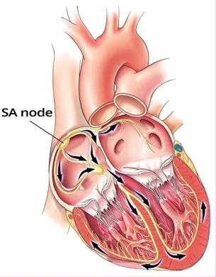
- Tính tự động (automaticity)
- Mọi phần của hệ thống dẫn truyền (conduction system) và cơ tim co bóp (working myocardium)
- Đều có khả năng tự phát sinh xung động (impulses)
- Ức chế vượt tần (overdrive suppression)
- Xung động lan qua hệ thống dẫn truyền xuất phát từ ổ phát nhịp (focus)
- Ổ phát xung động với tần số cao nhất
- Ổ có tần số cao nhất sẽ vô hiệu hoá các ổ
- Có tần số thấp hơn (ức chế vượt tần – overdrive suppression)
- Xung động lan qua hệ thống dẫn truyền xuất phát từ ổ phát nhịp (focus)
- Nút xoang (sinoatrial node) (nút SA – SA node)
- Tự phát sinh xung động với tần số 60 – 100/phút
- Các ổ khác phát xung động với tần số thấp hơn
Nhịp tim (Heart Rhythm)
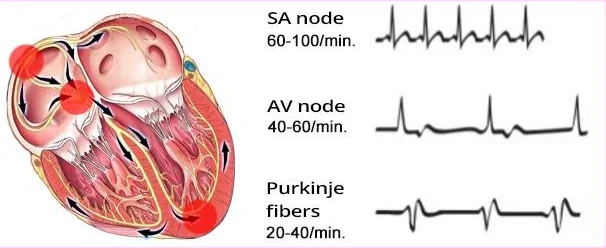
Các nhịp tim cơ bản (Basic Heart Rhythms)
- Nhịp tim luôn được quyết định bởi ổ (các ổ) phát ra xung động (impulses) với tần số cao nhất (ức chế vượt tần – overdrive suppression)
- Có 3 nhịp tim cơ bản
- Nhịp xoang (xung động do nút xoang – SA node phát ra)
- Nhịp bộ nối (junctional rhythm) (xung động do bộ nối nhĩ thất – AV junction phát ra)
- Nhịp thất (ventricular rhythm) (xung động do các sợi Purkinje ở thất phát ra)
- Nhịp xoang là nhịp tim sinh lý
- Bởi vì nút xoang (sinoatrial node – SA node) phát xung động với tần số cao nhất (ức chế vượt tần – overdrive suppression)
- Nút xoang được gọi là chủ nhịp chính (primary pacemaker) (bộ phận định nhịp độ)
Sóng P và nhịp xoang (P Wave and Sinus Rhythm)
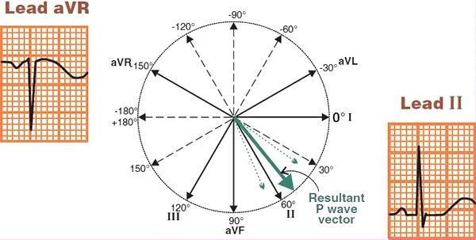
Sóng P và các chuyển đạo chi (P Wave and Limb Leads)
- Trong nhịp xoang, xung động xuất phát từ nút xoang (sinoatrial node – SA node)
- Mỗi xung động lan từ nút xoang ra hai nhĩ về phía nút nhĩ thất (AV node)
- Điều này tạo ra một vectơ nhĩ (atrial vector), thể hiện trên ECG dưới dạng sóng P
- Sóng P là đặc trưng chủ yếu của nhịp xoang
- Sóng P sinh lý (physiological P wave)
- Âm ở chuyển đạo aVR (vì vectơ hướng ra xa chuyển đạo aVR)
- Dương ở các chuyển đạo I, II (vì vectơ hướng về phía các chuyển đạo I, II)
ECG và nhịp xoang (ECG and Sinus Rhythm)
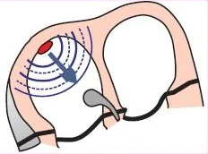
- Sóng P (là đặc trưng chủ yếu của nhịp xoang)
- Xung động từ nút xoang tạo ra sóng P. Sóng P:
- Dương ở các chuyển đạo I, II
- Âm ở chuyển đạo aVR
- Xung động từ nút xoang tạo ra sóng P. Sóng P:
- Tần số tim 60-100/phút
- Trẻ em có nhịp nhanh xoang sinh lý (tần số > 100/phút)
- Hoạt động tim đều (các khoảng PP và RR không thay đổi)
- Loạn nhịp hô hấp (respiratory arrhythmia) - là nhịp xoang không đều do thở
- Xung động sau đó đi xuống hai thất qua bộ nối nhĩ thất (AV junction)
- Điều này tạo ra các phức bộ QRS hẹp (< 0,12s),
nếu không có dẫn truyền lệch hướng (aberrant conduction)
- Điều này tạo ra các phức bộ QRS hẹp (< 0,12s),
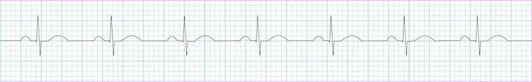
Nhịp xoang (Sinus Rhythm)
- Sóng P: kích thước và hình dạng bình thường, xuất hiện trước mỗi phức bộ QRS
- Tần số tim: 77/phút
- Hoạt động tim đều: khoảng PP hằng định
- Khoảng PQ: hằng định (0,12s)
- Phức bộ QRS hẹp (< 0,12s)
Tần số và nhịp xoang (Frequency and Sinus Rhythm)
- Nút xoang chịu sự chi phối một phần của hệ thần kinh, hệ này điều chỉnh tần số nút xoang trong khoảng 60-100/phút
- Hệ thần kinh giao cảm - làm tăng tần số nút xoang
- Hệ thần kinh phó giao cảm - làm giảm tần số nút xoang
- Các biến thể sinh lý của nhịp xoang:
- Nhịp nhanh xoang (sinus tachycardia): f > 100/phút (ở người lớn, hoặc trên giới hạn trên của bình thường ở trẻ em)
- Nhịp chậm xoang (sinus bradycardia): f < 60/phút (ở người lớn, hoặc dưới giới hạn dưới của bình thường ở trẻ em)
- Loạn nhịp xoang (sinus arrhythmia): nhịp xoang không đều, là biến thể bình thường ở người trẻ, luyện tập thể lực
- Tần số sinh lý của nút xoang theo tuổi:
- Trẻ sơ sinh: 130/phút
- Trẻ 2 tuổi: 120/phút
- Trẻ 4 tuổi: 110/phút
- Trẻ 6 tuổi: 100/phút
- Trẻ 10 tuổi: 90/phút
- Trẻ 14 tuổi: 80/phút
- Người lớn 18 tuổi: 70/phút
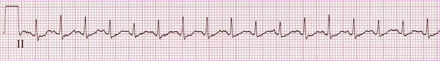
Nhịp nhanh xoang (Sinus Tachycardia)
- Tần số: 150/phút
- Sóng P khó nhận ra hơn, hoà lẫn với sóng T
- Luân phiên điện thế QRS (QRS alternans): thay đổi biên độ của các phức bộ QRS
- Tần số tim đều (khoảng PP hằng định)
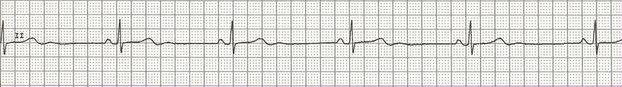
Nhịp chậm xoang (Sinus Bradycardia)
- Tần số: 35/phút
- Sóng P hiện diện trước mỗi phức bộ QRS
- Tần số tim đều (khoảng PP hằng định)
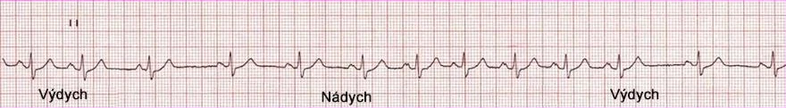
Loạn nhịp xoang hô hấp (Sinus Respiratory Arrhythmia)
- Tần số trung bình: 90/phút
- Tần số tim không đều (khoảng PP thay đổi)
- Khoảng PQ hằng định
- Sóng P hiện diện và đồng dạng, không gợi ý rung nhĩ (atrial fibrillation)
- Loạn nhịp xoang (sinus arrhythmia) là biến thể của bình thường, đặc biệt ở vận động viên trẻ, với tần số nút xoang thay đổi:
- Khi hít vào (ưu thế giao cảm) - tần số nút xoang tăng
- Khi thở ra (ưu thế phó giao cảm) - tần số nút xoang giảm
- Đây là nhịp xoang (kèm loạn nhịp hô hấp – respiratory arrhythmia), vì xung động xuất phát từ nút xoang
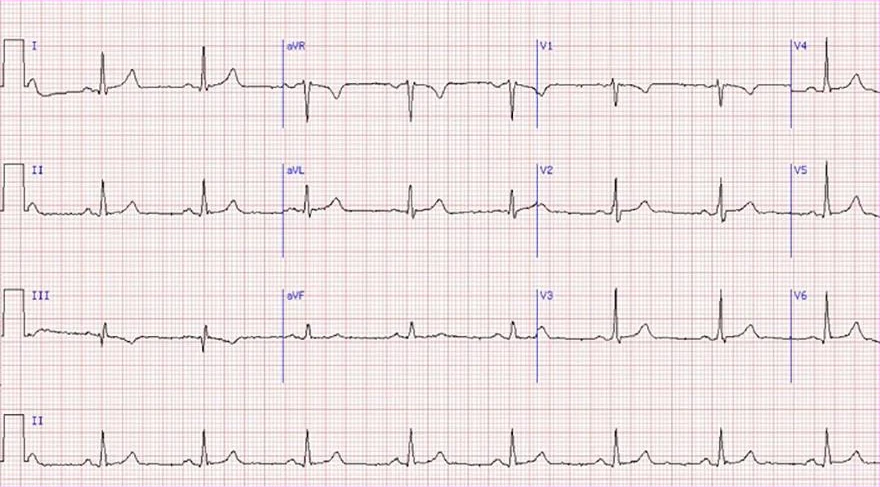
Nhịp xoang (Sinus Rhythm)
- Tần số: 60/phút
- Sóng P sinh lý
- Dương (I, II)
- Âm (aVR)
- Khoảng PQ hằng định (0,18s)
- Phức bộ QRS hẹp (<0,12s)
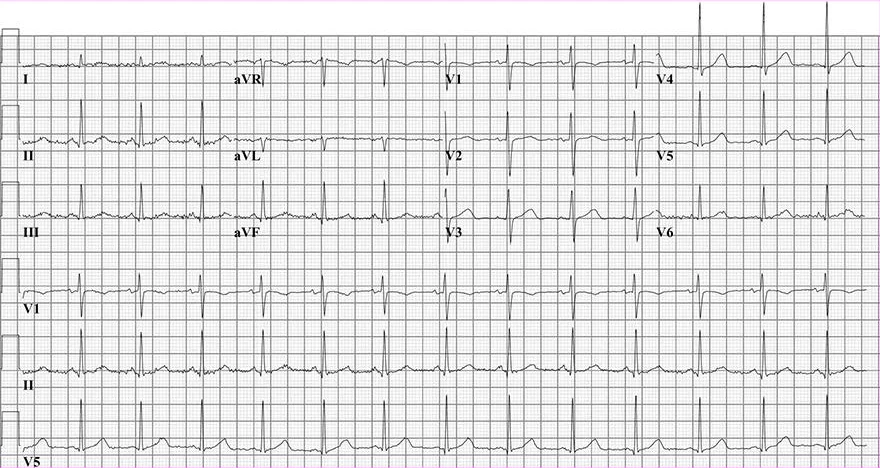
Nhịp xoang (Sinus Rhythm)
- Tần số: 75/phút
- Sóng P sinh lý
- Dương (I, II)
- Âm (aVR)
- Khoảng PQ hằng định (0,16s)
- Phức bộ QRS hẹp (<0,12s)
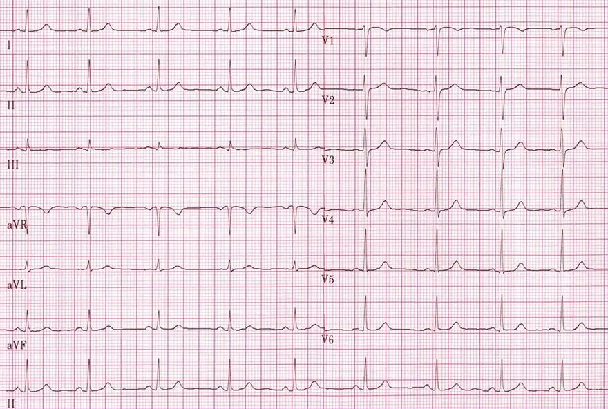
Nhịp xoang (Sinus Rhythm)
- Tần số: 75/phút
- Sóng P sinh lý
- Dương (I, II)
- Âm (aVR)
- Khoảng PQ hằng định (0,12s)
- Phức bộ QRS hẹp (<0,12s)
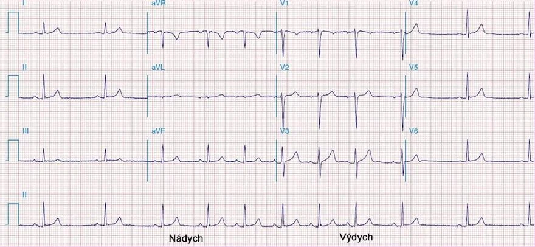
Loạn nhịp xoang hô hấp (Sinus Respiratory Arrhythmia)
- Tần số trung bình: 80/phút
- Sóng P sinh lý
- Dương (I, II)
- Âm (aVR)
- Nhịp tim không đều (thay đổi khoảng PP và khoảng RR)
- Nhịp không đều thấy rõ nhất ở chuyển đạo ghi liên tục (continuous lead) (II)
- Đây là nhịp xoang (kèm loạn nhịp hô hấp – respiratory arrhythmia)
- Vì xung động xuất phát từ nút xoang
- Khoảng PQ hằng định (0,16s)
- Phức bộ QRS hẹp (<0,12s)
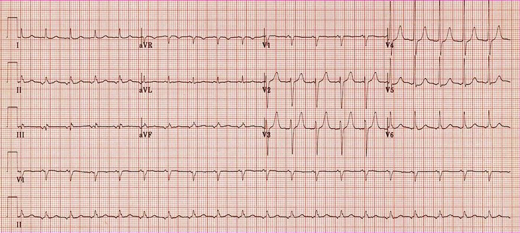
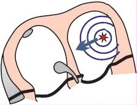
Nhịp nhanh nhĩ ổ (Focal Atrial Tachycardia)
- Sóng P có hình dạng bất thường
- Âm (II, III, aVF)
- Dương (V1)
- Sóng P bình thường thì không âm ở (II, III, aVF) và không dương ở (V1)
- Tần số: 120/phút
- ECG này không phải là nhịp xoang
- Vì xung động không xuất phát từ nút xoang
- Đây là nhịp nhanh nhĩ ổ (focal atrial tachycardia)
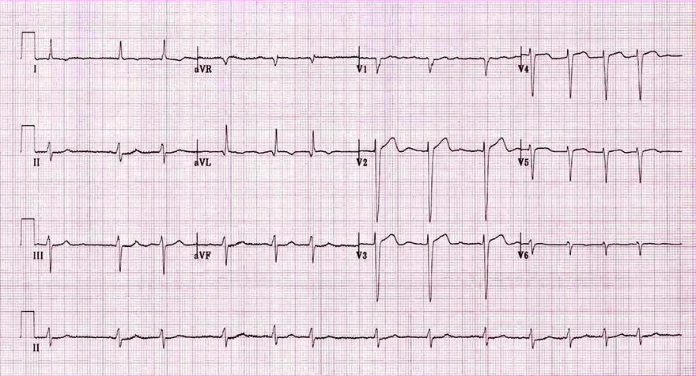
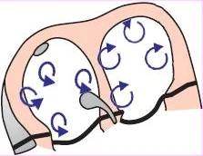
Rung nhĩ (Atrial Fibrillation)
- Tần số 80/phút
- Nhịp tim không đều một cách không quy luật (irregularly irregular) (các khoảng RR khác nhau)
- Không thấy sóng P, vì xung động không xuất phát từ nút xoang
- Trên ECG là rung nhĩ (atrial fibrillation) (rối loạn nhịp tim thường gặp nhất)
- Trong hai nhĩ có nhiều ổ lạc chỗ (vòng vào lại nhỏ – micro re-entry)
- Mỗi ổ phát ra vectơ riêng và khử cực hai nhĩ
- Hai nhĩ có tần số 350-600/phút, do đó không thấy sóng P
- Các phức bộ QRS không đều một cách không quy luật (các khoảng RR khác nhau)
- Bởi vì các xung động từ nhĩ (350-600/phút)
- Được lọc qua nút nhĩ thất (AV node) một cách không đều
- Bởi vì các xung động từ nhĩ (350-600/phút)
NHỊP NHANH XOANG
Nhịp nhanh xoang
Nút xoang
- Tính tự động (automaticity)
- Mọi phần của hệ thống dẫn truyền và cơ tim công năng (working myocardium)
- Đều có khả năng tự phát sinh xung động
- Ức chế vượt tần số (overdrive suppression)
- Xung động lan truyền qua hệ thống dẫn truyền, khởi đi từ ổ phát nhịp
- Là ổ phát xung động với tần số cao nhất
- Ổ có tần số cao nhất sẽ ức chế các ổ
- Có tần số thấp hơn (ức chế vượt tần số)
- Xung động lan truyền qua hệ thống dẫn truyền, khởi đi từ ổ phát nhịp
- Nút xoang (SA node)
- Tự phát sinh xung động với tần số 60 - 100/phút
- Các ổ khác phát xung động với tần số thấp hơn
Tần số và nhịp xoang
- Nút xoang được kiểm soát một phần bởi hệ thần kinh, hệ này điều chỉnh tần số nút xoang trong khoảng 60-100/phút
- Hệ thần kinh giao cảm - làm tăng tần số nút xoang
- Hệ thần kinh phó giao cảm - làm giảm tần số nút xoang
- Các biến thể sinh lý của nhịp xoang:
- Nhịp nhanh xoang: f > 100/phút (ở người lớn, hoặc trên giới hạn trên của giá trị bình thường ở trẻ em)
- Nhịp chậm xoang (sinus bradycardia): f < 60/phút (ở người lớn, hoặc dưới giới hạn dưới của giá trị bình thường ở trẻ em)
- Loạn nhịp xoang (sinus arrhythmia). Đây là nhịp xoang không đều, một biến thể bình thường ở người trẻ, có luyện tập thể lực
- Tần số nút xoang sinh lý theo tuổi:
- Trẻ sơ sinh: 130/phút
- Trẻ 2 tuổi: 120/phút
- Trẻ 4 tuổi: 110/phút
- Trẻ 6 tuổi: 100/phút
- Trẻ 10 tuổi: 90/phút
- Trẻ 14 tuổi: 80/phút
- Người trưởng thành 18 tuổi: 70/phút
Nhịp nhanh xoang
- Nhịp nhanh xoang là nhịp xoang có tần số > 100/phút
- Ở trẻ em, điều này có nghĩa là tần số trên giới hạn trên của giá trị bình thường
- Nút xoang còn nguyên vẹn, chỉ phát xung động với tần số cao hơn (tăng tính tự động — increased automaticity)
- Nhịp nhanh xoang là một triệu chứng thứ phát - một dấu hiệu của bệnh lý khác
- Bệnh nguyên phát kích thích nút xoang, làm tăng tần số của nút xoang
- Khi có nhịp nhanh xoang, luôn phải tìm nguyên nhân nguyên phát
- Ví dụ: bệnh nhân có bệnh nguyên phát là angina kèm sốt, và thứ phát (do sốt) có nhịp nhanh xoang
- Tần số tối đa của nhịp nhanh xoang là 220 - tuổi.
- Bệnh nhân 30 tuổi có nhịp nhanh xoang tối đa là 190/phút (220 - 30)
- Nhịp nhanh xoang hiếm khi vượt quá tần số 170/phút
- Điều trị nhịp nhanh xoang là điều trị theo nguyên nhân, giải quyết bệnh lý nền gây ra nhịp nhanh xoang (bệnh nguyên phát)
ECG và nhịp nhanh xoang
- Tần số > 100/phút (ở người lớn, hoặc trên giới hạn trên của giá trị bình thường ở trẻ em)
- Nhịp xoang có tần số 60-100/phút
- Sóng P sinh lý (là dấu hiệu cơ bản của nhịp xoang)
- Dương ở các chuyển đạo I, II
- Âm ở chuyển đạo aVR
- Xung động sau đó dẫn xuống hai thất qua bộ nối nhĩ – thất (AV junction)
- Tạo ra các phức bộ QRS hẹp (< 0.12s), nếu không có dẫn truyền lệch hướng (aberrant conduction)
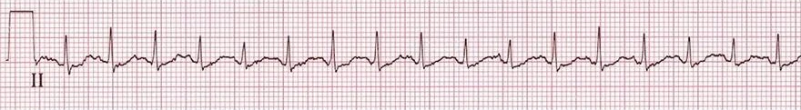
Nhịp nhanh xoang
- Tần số: 150/phút (>100/phút)
- Sóng P khó thấy hơn vì chồng lên sóng T
- Luân phiên QRS (QRS alternans): thay đổi biên độ các phức bộ QRS
- Nhịp tim đều (khoảng RR không đổi)
Các nguyên nhân thường gặp nhất của nhịp nhanh xoang
- Gắng sức thể lực
- Đau, stress, lo âu
- Caffeine, Red Bull, thuốc
- Mất nước
- Sốt, nhiễm khuẩn huyết (sepsis)
- Thiếu máu
- Cường giáp (hyperthyroidism)
- U tủy thượng thận (pheochromocytoma)
- Thuyên tắc phổi (pulmonary embolism)
- Thiếu oxy (hypoxia)
- Nhồi máu cơ tim (myocardial infarction)
- Tụt huyết áp
- Nhịp nhanh xoang không thích hợp (inappropriate sinus tachycardia)
- Đây là nhịp nhanh xoang do rối loạn chức năng nút xoang
- Nút xoang phát xung động với tần số > 100/phút
- Đây là một chẩn đoán rất hiếm; nhịp nhanh xoang gần như luôn là thứ phát
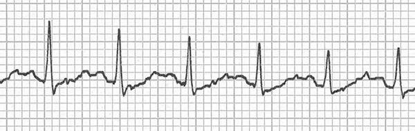
Nhịp nhanh xoang
- Tần số: 150/phút (>100/phút)
- Sóng P khó thấy hơn vì chồng lên sóng T
- Sóng P và sóng T tạo thành hai đỉnh, giống các gù của lạc đà hai gù (bactrian camel)
- Hình ảnh ECG này trong nhịp nhanh xoang trong tiếng Anh đôi khi được gọi là "camel hump" (gù lạc đà)
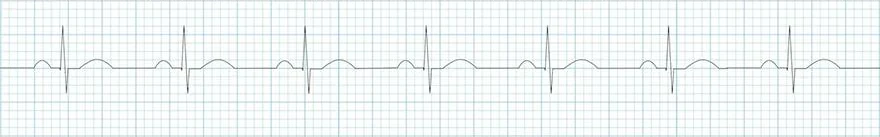
Nhịp xoang
- Tần số: 77/phút
- Nếu tần số > 100/phút, đó sẽ là nhịp nhanh xoang
- Nhịp tim đều: khoảng RR không đổi
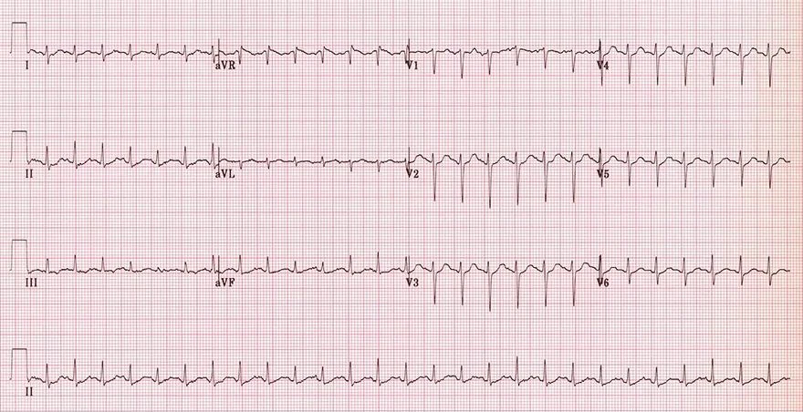
Nhịp nhanh xoang
- Tần số: 150/phút
- Sóng P sinh lý
- Dương (I, II)
- Âm (aVR)
- Sóng P hoà lẫn sát với sóng T và cùng nhau tạo thành "hai gù"
- Luân phiên QRS - thay đổi biên độ các phức bộ QRS
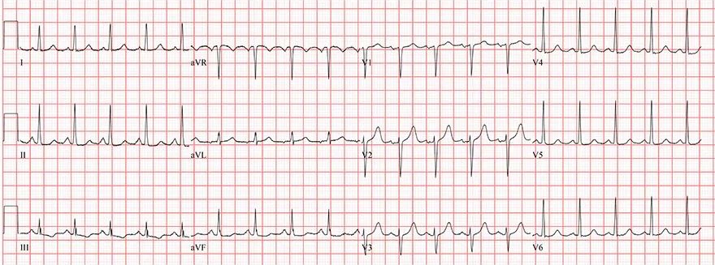
Nhịp nhanh xoang
- Tần số: 120/phút
- Sóng P sinh lý
- Dương (I, II)
- Âm (aVR)
- Sóng P dễ đánh giá hơn, không hoà lẫn với sóng T
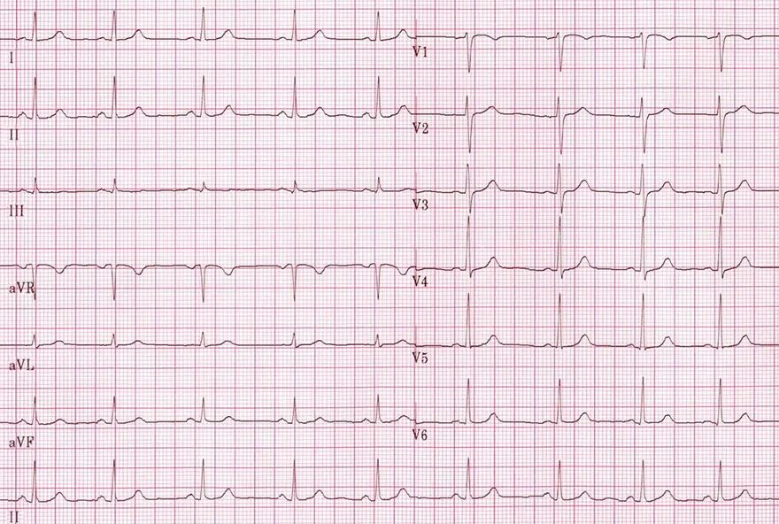
Nhịp xoang
- Tần số: 75/phút
- Nếu tần số > 100/phút, đó sẽ là nhịp nhanh xoang
- Sóng P sinh lý
- Dương (I, II)
- Âm (aVR)
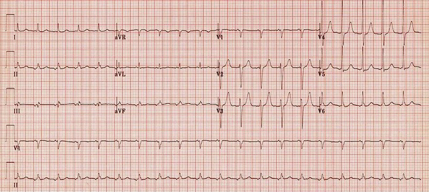
Nhịp nhanh nhĩ ổ
- Tần số: 120/phút
- Sóng P không có hình dạng sinh lý
- Âm (II, III, aVF)
- Dương (V1)
- Sóng P sinh lý thì không âm (II, III, aVF), và không dương (V1)
- Điện tâm đồ này không phải nhịp xoang
- Vì xung động không xuất phát từ nút xoang
- Đây là nhịp nhanh nhĩ ổ (focal atrial tachycardia)
NHỊP NHANH XOANG KHÔNG THÍCH HỢP — ECG
Nhịp nhanh xoang không thích hợp (inappropriate sinus tachycardia – IST)
Nút xoang nhĩ (sinoatrial node)
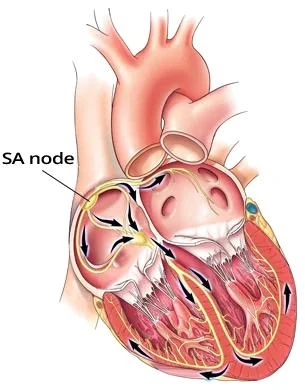
- Tính tự động (automaticity)
- Mỗi phần của hệ thống dẫn truyền và của cơ tim hoạt động (working myocardium)
- Đều có khả năng tự phát sinh xung động một cách tự động
- Ức chế vượt tần số (overdrive suppression)
- Xung động lan theo hệ thống dẫn truyền, đi từ ổ phát nhịp
- Mà phát xung động với tần số cao nhất
- Ổ phát nhịp có tần số cao nhất sẽ làm bất hoạt các ổ phát nhịp khác
- Có tần số thấp hơn (ức chế vượt tần số — overdrive suppression)
- Xung động lan theo hệ thống dẫn truyền, đi từ ổ phát nhịp
- Nút xoang nhĩ (SA node)
- Tự phát sinh xung động với tần số 60 – 100/phút.
- Các ổ phát nhịp khác phát xung động với tần số thấp hơn
Tần số và nhịp xoang
- Nút xoang chịu sự chi phối một phần của hệ thần kinh, hệ này điều chỉnh tần số của nút xoang trong khoảng 60–100/phút
- Hệ thần kinh giao cảm - làm tăng tần số của nút xoang
- Hệ thần kinh phó giao cảm - làm giảm tần số của nút xoang
- Các biến thể sinh lý của nhịp xoang:
- Nhịp nhanh xoang (sinus tachycardia): f > 100/phút. (ở người lớn, hoặc trên giới hạn trên của bình thường ở trẻ em)
- Nhịp chậm xoang (sinus bradycardia): f < 60/phút. (ở người lớn, hoặc dưới giới hạn dưới của bình thường ở trẻ em)
- Loạn nhịp xoang (sinus arrhythmia): Là một nhịp xoang không đều, là biến thể bình thường ở người trẻ được luyện tập
- Tần số sinh lý của nút xoang theo tuổi:
- Trẻ sơ sinh: 130/phút.
- Trẻ 2 tuổi: 120/phút.
- Trẻ 4 tuổi: 110/phút.
- Trẻ 6 tuổi: 100/phút.
- Trẻ 10 tuổi: 90/phút.
- Trẻ 14 tuổi: 80/phút.
- Người 18 tuổi: 70/phút.
Nhịp nhanh xoang không thích hợp
- Là một nhịp nhanh xoang không có nguyên nhân, không phải là cơ chế bù trừ thứ phát
- Nút xoang tăng tính tự động mà không có nguyên nhân giải thích được
- Chủ yếu xảy ra ở nữ giới trẻ, khoẻ mạnh dưới 30 tuổi
- Nguyên nhân chưa rõ, được cho là do:
- Cơ chế tự miễn. Các tự kháng thể kích thích nút xoang
- Tăng nhạy cảm của nút xoang với các phân tử: histamine, serotonin, adrenaline, noradrenaline
- Điều thú vị là nút xoang bị tổn thương theo kiểu đi vào vùng nhịp nhanh, chứ không phải nhịp chậm
- Tần số của nút xoang tăng không tương xứng khi gắng sức tối thiểu
- Chẩn đoán khó, phải loại trừ mọi nguyên nhân của nhịp nhanh xoang
- Nhịp nhanh xoang không thích hợp là:
- Nhịp nhanh xoang lúc nghỉ (f: >100/phút.) chủ yếu vào ban ngày, không có nguyên nhân
- Tần số tim trung bình trong 24 giờ > 95/phút.
ECG và nhịp nhanh xoang không thích hợp
- Nhịp nhanh xoang
- Chủ yếu vào ban ngày, không có nguyên nhân rõ ràng
- Tần số tim trung bình trong 24 giờ > 95/phút.
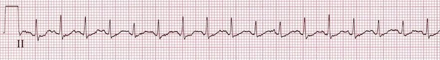
Nhịp nhanh xoang
- Tần số: 150/phút. (>100/phút.)
- Sóng P kém thấy rõ, chồng lên sóng T
- QRS alternans: biên độ các phức bộ QRS thay đổi
- Bệnh nhân có nhịp nhanh xoang không thích hợp nếu:
- Không có nguyên nhân gây nhịp nhanh xoang
- Có nhịp nhanh lúc nghỉ (f > 100/phút.)
- Tần số tim trung bình trong 24 giờ > 95/phút.
- Nhịp nhanh xoang không thích hợp là một chẩn đoán rất hiếm gặp
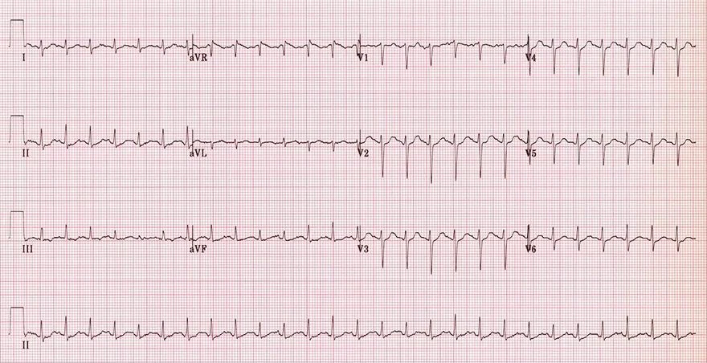
Nhịp nhanh xoang
- Tần số: 150/phút.
- Sóng P sinh lý
- Dương (I, II)
- Âm (aVR)
- Sóng P chồng khít lên sóng T, tạo hình ảnh "hai gò" ("double hump")
- QRS alternans - biên độ các phức bộ QRS thay đổi
- Bệnh nhân có nhịp nhanh xoang không thích hợp nếu:
- Không có nguyên nhân gây nhịp nhanh xoang
- Có nhịp nhanh lúc nghỉ (f > 100/phút.)
- Tần số tim trung bình trong 24 giờ > 95/phút.
- Nhịp nhanh xoang không thích hợp là một chẩn đoán rất hiếm gặp
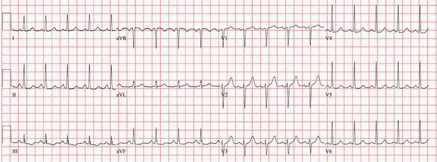
Nhịp nhanh xoang
- Tần số: 120/phút.
- Sóng P sinh lý
- Dương (I, II)
- Âm (aVR)
- Sóng P thấy rõ hơn, không chồng lên sóng T
- Bệnh nhân có nhịp nhanh xoang không thích hợp nếu:
- Không có nguyên nhân gây nhịp nhanh xoang
- Có nhịp nhanh lúc nghỉ (f > 100/phút.)
- Tần số tim trung bình trong 24 giờ > 95/phút.
- Nhịp nhanh xoang không thích hợp là một chẩn đoán rất hiếm gặp
NHỊP CHẬM XOANG – ECG
Nút xoang
- Tính tự động (automaticity)
- Mọi phần của hệ thống dẫn truyền và cơ tim co bóp (working myocardium)
- Đều có khả năng tự phát sinh xung động (impulses)
- Ức chế vượt tần số (overdrive suppression)
- Xung động lan truyền trong hệ thống dẫn truyền từ vị trí
- Phát xung động với tần số cao nhất
- Vị trí có tần số cao nhất sẽ vô hiệu hoá các vị trí
- Có tần số thấp hơn (ức chế vượt tần số – overdrive suppression)
- Xung động lan truyền trong hệ thống dẫn truyền từ vị trí
- Nút xoang (SA node)
- Tự phát sinh xung động với tần số 60 – 100/phút
- Các vị trí khác phát xung động với tần số thấp hơn
Tần số và nhịp xoang
- Nút xoang chịu sự chi phối một phần của hệ thần kinh, hệ này điều chỉnh tần số nút xoang trong khoảng 60 – 100/phút
- Hệ thần kinh giao cảm – làm tăng tần số nút xoang
- Hệ thần kinh đối giao cảm – làm giảm tần số nút xoang
- Các biến thể sinh lý của nhịp xoang:
- Nhịp nhanh xoang (sinus tachycardia): f > 100/phút (ở người lớn, hoặc trên giới hạn trên của bình thường ở trẻ em)
- Nhịp chậm xoang (sinus bradycardia): f < 60/phút (ở người lớn, hoặc dưới giới hạn dưới của bình thường ở trẻ em)
- Loạn nhịp xoang (sinus arrhythmia). Đây là một nhịp xoang không đều, là biến thể bình thường ở người trẻ được luyện tập
- Tần số sinh lý của nút xoang theo tuổi:
- Trẻ sơ sinh: 130/phút
- 2 tuổi: 120/phút
- 4 tuổi: 110/phút
- 6 tuổi: 100/phút
- 10 tuổi: 90/phút
- 14 tuổi: 80/phút
- 18 tuổi: 70/phút
Nhịp chậm xoang
- Nhịp chậm xoang là một nhịp xoang có tần số < 60/phút (đôi khi được ghi nhận với tần số < 50/phút)
- Ở trẻ em, đó là tần số dưới giới hạn dưới của bình thường
- Vận động viên có cung lượng tim tâm thu cao hơn, nên tần số thấp hơn đã đủ cho nhịp tim lúc nghỉ của họ
- Nhịp chậm xoang được coi là biến thể bình thường ở vận động viên
- Trong các trường hợp nhịp chậm xoang nặng, một chủ nhịp thứ cấp sẽ được hoạt hoá: nhịp bộ nối (junctional rhythm)
ECG và nhịp chậm xoang
- Tần số < 60/phút (ở người lớn, hoặc dưới giới hạn dưới của bình thường ở trẻ em)
- Nhịp xoang có tần số 60 – 100/phút
- Sóng P sinh lý (là dấu hiệu cơ bản của nhịp xoang)
- Dương ở các chuyển đạo I, II
- Âm ở chuyển đạo aVR
- Xung động sau đó đi xuống thất qua bộ nối nhĩ – thất (AV junction)
- Phức bộ QRS hẹp (< 0,12s) được hình thành nếu không có dẫn truyền lệch hướng (aberrant conduction)
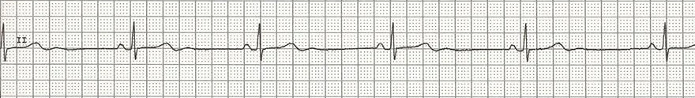
Nhịp chậm xoang
- Tần số: 35/phút (< 60/phút)
- Sóng P bình thường
- Sóng P là dấu hiệu cơ bản của nhịp xoang (và của nhịp chậm xoang)
- Khoảng PQ hằng định, không kéo dài: 0,16s (< 0,2s)
- Phức bộ QRS hẹp (< 0,12s)
Các nguyên nhân thường gặp nhất của nhịp chậm xoang
- Trong khi ngủ, đây là tình trạng bình thường (tăng trương lực phế vị)
- Tăng trương lực phế vị (vận động viên, các thủ thuật cường phế vị)
- Chán ăn tâm thần (anorexia nervosa)
- Nhồi máu cơ tim thành dưới
- Hội chứng suy nút xoang (sick sinus syndrome)
- Suy giáp
- Hạ nhiệt độ cơ thể (hypothermia)
- Tăng kali máu
- Tăng áp lực nội sọ (phản xạ Cushing – Cushing's reflex)
- Viêm cơ tim
- Thuốc chẹn bêta
- Thuốc chẹn kênh calci
- Digoxin
Các thủ thuật cường phế vị
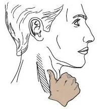
- Kích thích dây thần kinh phế vị và sau đó gây ra:
- Ức chế nút xoang
- Làm chậm dẫn truyền qua bộ nối nhĩ – thất
- Các thủ thuật cường phế vị được biết đến nhiều nhất:
- Xoa xoang cảnh (carotid sinus massage)
- Làm chậm tính tự động của nút xoang và nhĩ (không tác động lên vòng vào lại – reentry – trong nhĩ)
- Xoa vùng cổ bằng hai ngón tay, ngay dưới bờ dưới xương hàm
- Thủ thuật Valsalva
- Bệnh nhân dùng tay bịt mũi và thở ra gắng sức qua mũi đã bị bịt
- Hoặc rặn như khi đi đại tiện
- Gây phản xạ nôn (gag reflex)
- Bệnh nhân đặt ngón tay lên gốc lưỡi
- Ấn lên nhãn cầu
- Ấn lên nhãn cầu của bệnh nhân, tuy nhiên cách này ít được dùng
- Phản xạ lặn (diving reflex)
- Nhúng mặt vào nước lạnh dưới 21 °C
- Xoa xoang cảnh (carotid sinus massage)
Phản xạ lặn ở động vật có vú
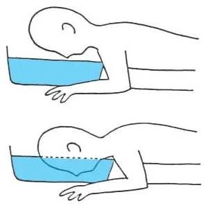
- Đây là một phản xạ bảo vệ ở động vật có vú, chống lại lạnh cực độ
- Phản xạ được khởi phát bởi nước có nhiệt độ dưới 21 °C
- Nước phải tiếp xúc với mặt
- Nếu bệnh nhân nhúng mặt vào nước lạnh dưới 21 °C
- Sẽ gây ra nhịp chậm xoang
- Người lặn có thể có nhịp chậm xuống tới 20/phút
- Điều này giúp cơ thể sử dụng ít oxy hơn khi ở dưới nước
- Trong hạ nhiệt độ cơ thể (< 35 °C), sóng J xuất hiện trên ECG
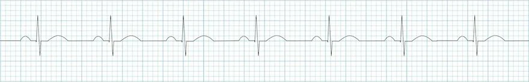
Nhịp xoang
- Tần số: 77/phút
- Nếu tần số < 60/phút thì đó sẽ là nhịp chậm xoang
- Sóng P bình thường
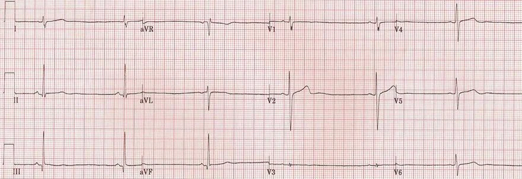
Nhịp chậm xoang
- Tần số: 35/phút
- Có sóng P
- Khoảng PQ không kéo dài (0,14s)
- Bệnh nhân 15 tuổi bị chán ăn tâm thần
- Sóng U (aVR, V2, V4-6)
- Có thể xuất hiện khi có nhịp chậm
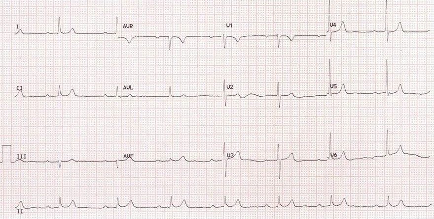
Nhịp chậm xoang và block nhĩ – thất độ I
- Tần số: 47/phút
- Có sóng P
- Block nhĩ – thất độ I
- Khoảng PQ kéo dài (0,32s)
- Khi có nhịp chậm xoang kèm block nhĩ – thất độ I, cần nghĩ đến:
- Quá liều thuốc chẹn bêta, thuốc chẹn kênh calci
- Nhồi máu cơ tim thành dưới
- Bệnh nhân này bị quá liều thuốc chẹn bêta
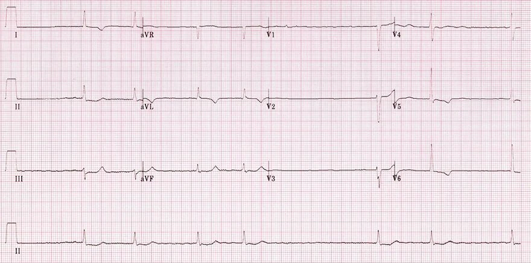
Rung nhĩ
- Không có sóng P trên ECG, nên đây không phải nhịp chậm xoang
- Nhịp tim không đều một cách không có quy luật ("irregularly irregular" — các khoảng RR có độ dài khác nhau)
- Tần số < 60/phút (quy tắc 6 giây – 6-second rule)
- ECG cho thấy rung nhĩ (atrial fibrillation)
- Bệnh nhân có thể đang được điều trị làm chậm dẫn truyền qua nút nhĩ – thất
- Digoxin
- Thuốc chẹn bêta
- Thuốc chẹn kênh calci
- Hạ nhiệt độ cơ thể cũng có thể làm chậm dẫn truyền nhĩ – thất
- Bệnh nhân có thể đang được điều trị làm chậm dẫn truyền qua nút nhĩ – thất
- Đây là rung nhĩ sóng nhỏ (fine atrial fibrillation)
- Biên độ các sóng rung nhĩ ở V1 < 0,5mm
- ST chênh xuống và sóng T âm ở các chuyển đạo bên (I, aVL, V5, V6) gặp trong
- Thiếu máu cơ tim (ischemia)
- Digoxin
LOẠN NHỊP XOANG THEO HÔ HẤP – ĐIỆN TÂM ĐỒ
Loạn nhịp xoang, loạn nhịp xoang theo hô hấp (sinus arrhythmia, respiratory sinus arrhythmia)
Nút xoang nhĩ
- Tính tự động (automaticity)
- Mọi phần của hệ thống dẫn truyền và cơ tim hoạt động
- Đều có khả năng tự phát sinh xung động một cách tự động
- Ức chế vượt tần số (overdrive suppression)
- Xung động lan khắp hệ thống dẫn truyền xuất phát từ ổ phát nhịp
- Phát xung động với tần số cao nhất
- Ổ có tần số cao nhất sẽ vô hiệu hoá các ổ phát nhịp
- Có tần số thấp hơn (ức chế vượt tần số – overdrive suppression)
- Xung động lan khắp hệ thống dẫn truyền xuất phát từ ổ phát nhịp
- Nút xoang nhĩ (SA node)
- Tự phát sinh xung động với tần số 60 – 100/phút
- Các ổ phát nhịp khác phát xung động với tần số thấp hơn
Dây thần kinh lang thang và nhịp xoang
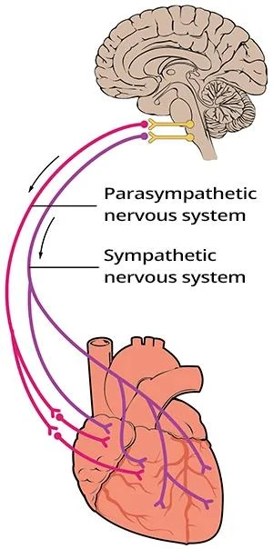
- Hệ thần kinh tự chủ gồm hai phần
- Nhìn chung có tác dụng đối lập nhau:
- Hệ thần kinh giao cảm
- Bảo đảm huy động năng lượng tức thì
- Hoạt động theo nguyên tắc "chiến đấu hay bỏ chạy" (fight or flight)
- Kích thích các cơ quan (ví dụ nhịp nhanh xoang)
- Hệ thần kinh phó giao cảm
- Bảo đảm dự trữ năng lượng và hồi phục cơ thể
- Hoạt động theo nguyên tắc "nghỉ ngơi và tiêu hoá" (rest and digest)
- Ức chế các cơ quan (ví dụ nhịp chậm xoang)
- Dây thần kinh lang thang (dây thần kinh sọ số X)
- Là dây thần kinh chính của hệ thần kinh phó giao cảm
- Cũng chi phối nút xoang nhĩ (SA node) và có tác dụng ức chế
- Gây nhịp chậm xoang
- Trong quá trình hô hấp, trương lực dây thần kinh lang thang thay đổi một cách sinh lý
- Hít vào làm tăng tần số
- Hít vào làm giảm trương lực dây thần kinh lang thang
- Nút xoang được "thả lỏng" và tính tự động của nút xoang tăng lên
- Thở ra làm giảm tần số
- Thở ra làm tăng trương lực dây thần kinh lang thang
- Nút xoang bị "hãm lại" và tính tự động của nút xoang giảm xuống
- Hít vào làm tăng tần số
Loạn nhịp xoang theo hô hấp
- Loạn nhịp xoang tuy mang chữ loạn nhịp (arrhythmia), nhưng đây là một biến thể của bình thường
- Trong quá trình hô hấp, trương lực dây thần kinh lang thang thay đổi lặp đi lặp lại, làm nút xoang chậm lại theo mỗi nhịp thở ra
- Hoạt tính tăng trương lực của dây thần kinh lang thang cao ở:
- Người trẻ
- Vận động viên
- Theo tuổi, hoạt tính tăng trương lực giảm dần. Người cao tuổi không có loạn nhịp xoang
- Trong đái tháo đường, xảy ra bệnh đa dây thần kinh do đái tháo đường (diabetic polyneuropathy)
- Do đó, người đái tháo đường không có loạn nhịp xoang theo hô hấp
ECG và loạn nhịp xoang theo hô hấp
- Sóng P sinh lý (đây là dấu hiệu cơ bản của nhịp xoang)
- Dương ở các chuyển đạo I, II
- Âm ở chuyển đạo aVR
- Tần số tim không đều
- (khoảng PP và RR thay đổi đều đặn theo nhịp thở)
- Khoảng P-P thay đổi hơn 120ms (3 ô nhỏ)
- Xung động sau đó dẫn xuống thất qua bộ nối nhĩ thất (AV junction)
- Tạo ra phức bộ QRS hẹp (< 0,12s) nếu không có dẫn truyền lệch hướng (aberrant conduction)
Chẩn đoán phân biệt
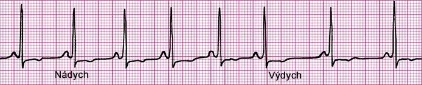
- Ngoại tâm thu nhĩ nhiều
- Block nhĩ thất độ II, Mobitz I (Wenckebach)
- Block xoang nhĩ độ II, type I (Wenckebach)
- Hội chứng suy nút xoang (sick sinus syndrome)
Loạn nhịp xoang theo hô hấp
- Nhịp xoang
- Có sóng P
- Loạn nhịp xoang theo hô hấp
- Khoảng PP (và RR) thay đổi theo nhịp thở
- Hít vào – khoảng PP ngắn lại (tần số tăng)
- Thở ra – khoảng PP dài ra (tần số giảm)
Loạn nhịp xoang không theo hô hấp
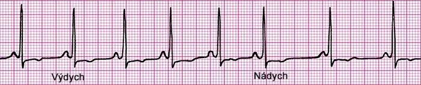
- Có hình ảnh ECG hoàn toàn giống loạn nhịp xoang theo hô hấp, nhưng không tương quan với chu kỳ hô hấp
- Thường gặp nhất trong:
- Dùng digoxin
- Hội chứng suy nút xoang
Loạn nhịp xoang không theo hô hấp
- Nhịp xoang
- Có sóng P
- Loạn nhịp xoang không theo hô hấp
- Khoảng PP (và RR) thay đổi theo nhịp thở
- Hít vào – khoảng PP dài ra (tần số giảm)
- Thở ra – khoảng PP ngắn lại (tần số tăng)
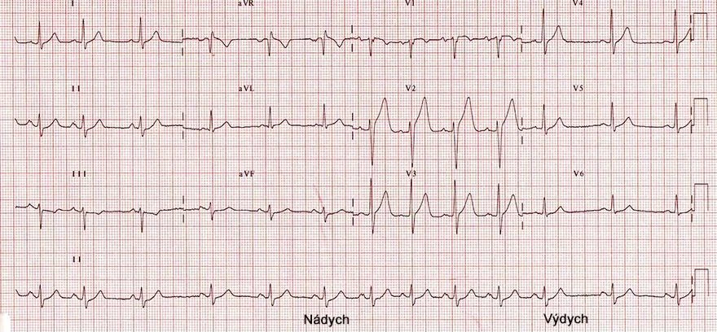
Loạn nhịp xoang theo hô hấp
- Tần số 80/phút (quy tắc sáu giây)
- Nhịp xoang
- Có sóng P
- P hai lá (P mitrale – phì đại nhĩ trái)
- Khoảng PQ không thay đổi
- Tần số tim không đều
- Khoảng PP thay đổi 0,44s theo nhịp thở
- Khoảng PP dài nhất là 1,04s (tần số 57/phút)
- Khoảng PP ngắn nhất là 0,6s (tần số 100/phút)
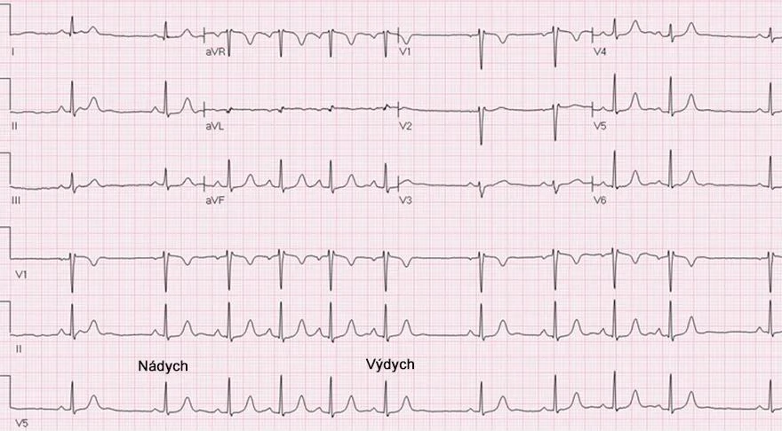
Loạn nhịp xoang theo hô hấp
- Tần số tim 80/phút (quy tắc 6 giây)
- Nhịp xoang
- Có sóng P
- Khoảng PQ không thay đổi
- Nhịp tim không đều
- Khoảng PP thay đổi 0,6s theo nhịp thở
- Khoảng PP dài nhất là 1,2s (tần số tim 50/phút)
- Khoảng PP ngắn nhất là 0,6s (tần số tim 100/phút)
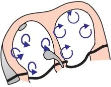
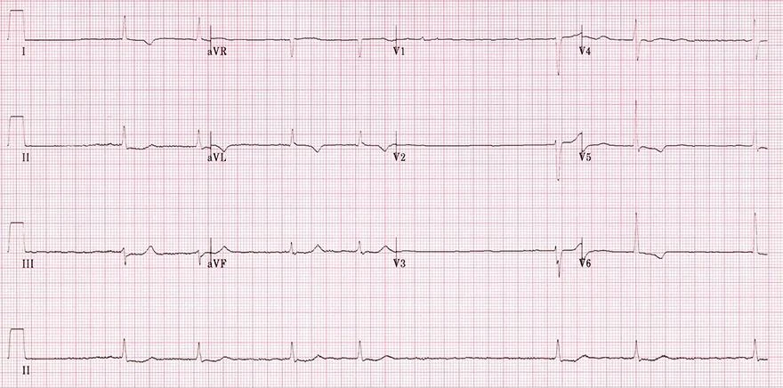
Rung nhĩ
- Không có sóng P trên ECG, do đó đây không phải là
- Loạn nhịp xoang theo hô hấp
- Nhịp chậm xoang
- Nhịp tim không đều một cách không có quy luật (irregularly irregular – các khoảng RR dài ngắn khác nhau)
- Tần số tim <60/phút (quy tắc 6 giây)
- ECG cho thấy rung nhĩ
- Bệnh nhân nhiều khả năng đang dùng thuốc làm chậm dẫn truyền qua nút nhĩ thất
- Digoxin
- Thuốc chẹn beta
- Thuốc chẹn kênh canxi
- Hạ thân nhiệt cũng có thể làm chậm dẫn truyền nhĩ thất
- Bệnh nhân nhiều khả năng đang dùng thuốc làm chậm dẫn truyền qua nút nhĩ thất
- Đây là rung nhĩ sóng nhỏ (fine atrial fibrillation)
- Biên độ sóng rung ở V1 <0,5mm
- ST chênh xuống và sóng T âm ở các chuyển đạo bên (I, aVL, V5, V6) gặp trong
- Thiếu máu cơ tim
- Digoxin
RỐI LOẠN NHỊP NHĨ ĐA Ổ (CHỦ NHỊP LANG THANG) — ECG
Rối loạn nhịp nhĩ đa ổ, chủ nhịp lang thang, chủ nhịp nhĩ lang thang (multifocal atrial arrhythmia, wandering pacemaker, wandering atrial pacemaker)
Nhịp xoang
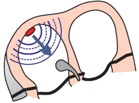
- Nhịp tim luôn được quyết định bởi vị trí (các vị trí)
- Phát ra xung động với tần số cao nhất (ức chế vượt tần số — overdrive suppression)
- Có 3 loại nhịp tim cơ bản
- Nhịp xoang (xung động do nút xoang — SA node — phát ra)
- Nhịp bộ nối (xung động do bộ nối nhĩ – thất — AV junction — phát ra)
- Nhịp thất (xung động do các sợi Purkinje ở thất phát ra)
- Nhịp xoang là nhịp tim sinh lý
- Vì nút xoang phát xung động với tần số cao nhất
- Nút xoang được gọi là chủ nhịp chính (primary pacemaker — nơi đặt nhịp)
Tính tự động của nhĩ
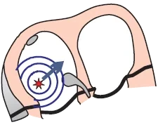
- Mọi phần của hệ thống dẫn truyền và cơ tim hoạt động (working myocardium)
- Đều có khả năng phát xung động (tính tự động — automaticity)
- Xung động được phát ra với tần số cao nhất bởi:
- Nút xoang: 60-100/phút. (nhịp xoang)
- Nhĩ: 55-60/phút. (nhịp nhĩ đa ổ)
- Bộ nối nhĩ – thất: 45-50/phút. (nhịp bộ nối)
- Tăng trương lực phó giao cảm (dây thần kinh X) làm giảm tính tự động của nút xoang
- Các ổ trong nhĩ được hoạt hoá và bắt đầu phát xung động
- Thay cho nút xoang (hoặc cùng với nút xoang)
- Tăng trương lực phó giao cảm gặp ở
- Vận động viên
- Người trẻ
- Các ổ trong nhĩ được hoạt hoá và bắt đầu phát xung động
Nhịp nhĩ đa ổ
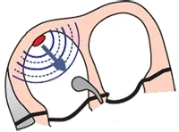
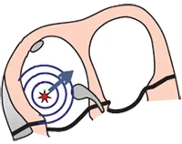
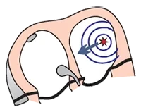
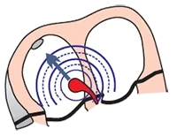
Nhịp nhĩ đa ổ (chủ nhịp lang thang)
- Nhịp nhĩ đa ổ đôi khi được gọi là chủ nhịp lang thang (wandering pacemaker)
- Vì chủ nhịp "lang thang khắp các nhĩ"
- Nhịp tim được quyết định bởi các ổ trong nhĩ, các ổ này lần lượt phát xung động một cách độc lập
- Ổ ở nhĩ, nút xoang, nút nhĩ thất...
- Cơ chế phát xung động là tính tự động
(một đặc tính sinh lý)
Sóng P sinh lý
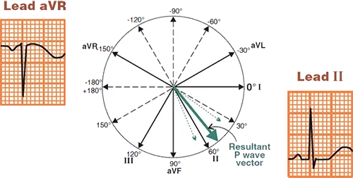
- Vector nhĩ (atrial vector) xuất phát từ nút xoang và hướng
- XA khỏi chuyển đạo aVR
- VỀ PHÍA chuyển đạo II
- Sóng P sinh lý là
- Dương ở chuyển đạo II
- Âm ở chuyển đạo aVR
- Trong trường hợp chủ nhịp lang thang
- Các sóng P có hình dạng khác nhau xen kẽ nhau
- Mỗi sóng P có một vector khác nhau (từ một ổ khác nhau)
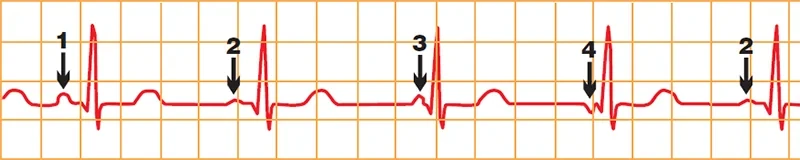
Nhịp nhĩ đa ổ
- Tần số tim: 70/phút.
- Nhịp tim không đều một cách không quy luật (irregularly irregular — các khoảng RR thay đổi)
- ECG cho thấy 4 sóng P có hình dạng khác nhau
- Vì mỗi ổ ngoại vị tạo ra một vector riêng biệt, có hướng khác nhau
- Khoảng PQ thay đổi
- Vì mỗi ổ ngoại vị ở một khoảng cách khác nhau so với nút nhĩ thất
ECG và nhịp nhĩ đa ổ
- Tần số < 100/phút.
- Nếu tần số > 100/phút. thì đó là nhịp nhanh nhĩ đa ổ (multifocal atrial tachycardia)
- Phức bộ QRS hẹp (< 0,12s)
- Phức bộ QRS có thể giãn rộng (> 0,12s) trong trường hợp dẫn truyền lệch hướng (aberrant conduction)
- Nhịp tim không đều một cách không quy luật
- 3 sóng P có hình dạng khác nhau xen kẽ nhau (thường là 3 sóng, nhưng đôi khi 4)
- Mỗi ổ ngoại vị tạo ra một sóng P khác nhau
- Khoảng PQ thay đổi
- Mỗi ổ ngoại vị ở một khoảng cách khác nhau so với nút nhĩ thất
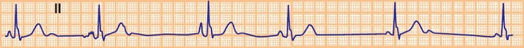
Nhịp nhĩ đa ổ
- Tần số: 40/phút.
- Nhịp tim không đều một cách không quy luật (các khoảng RR khác nhau)
- ECG cho thấy 3 sóng P có hình dạng khác nhau
- Vì mỗi ổ ngoại vị tạo ra một vector riêng biệt, có hướng khác nhau
- Khoảng PQ thay đổi
Tính tần số tim (quy tắc 6 giây)
- Nếu nhịp tim không đều một cách không quy luật:
- Tần số được tính bằng quy tắc 6 giây
(6-second rule)- Đây là tần số trung bình của các phức bộ QRS trong 6 giây (30 ô lớn)
- Tần số = số phức bộ QRS trong 6 giây x 10
Chủ nhịp lang thang và tần số 40/phút.
- Số phức bộ QRS trong 6 giây (30 ô lớn) là 4
- 4 x 10 = 40/phút.
Chủ nhịp lang thang và nhịp đôi
Nhịp nhĩ đa ổ (chủ nhịp lang thang)
- Có 3 ổ ngoại vị trong nhĩ (thường là 3)
- Các ổ này phát xung động độc lập với nhau với f: < 100/phút.
- Nút xoang cũng có thể lần lượt phát xung động
- Cơ chế của các ổ này là tính tự động
- Có 3 sóng P với hình dạng khác nhau (mỗi ổ tạo ra một sóng P khác nhau)
- Tần số tim không đều một cách không quy luật (các khoảng RR có độ dài khác nhau)
Nhịp nhĩ nhịp đôi
- Có 1 ổ ngoại vị trong nhĩ
- Ổ này phát xung động xen kẽ với nút xoang
- Tần số kết quả < 100/phút.
- Cơ chế của ổ này là tăng tính tự động
- Có 2 sóng P với hình dạng khác nhau
- Tần số tim không đều nhưng có quy luật (regularly irregular)
- Nhịp nhĩ nhịp đôi
- Kết hợp theo kiểu nhịp đôi với ngoại tâm thu nhĩ (atrial extrasystole)
Nhịp nhĩ đa ổ
- Tần số: 80/phút.
- 4 sóng P có hình dạng khác nhau
- Phức bộ QRS hẹp (< 0,12s)
- Nhịp tim không đều một cách không quy luật (dù trông có vẻ đều)
Nhịp nhĩ đa ổ
- Tần số 100/phút.
- Nếu tần số > 100/phút. thì đó sẽ là nhịp nhanh nhĩ đa ổ
- 4 sóng P có hình dạng khác nhau (một sóng P bị ẩn trong sóng T — mũi tên đen)
- Phức bộ QRS hẹp (< 0,12s)
- Nhịp tim không đều một cách không quy luật
Nhịp nhĩ đa ổ
- Tần số 80/phút.
- 3 sóng P có hình dạng khác nhau
- Phức bộ QRS hẹp (< 0,12s)
- Nhịp tim không đều một cách không quy luật
Nhịp nhĩ đa ổ
- Tần số: 90/phút.
- 4 sóng P có hình dạng khác nhau
- Phức bộ QRS hẹp (< 0,12s)
- Nhịp tim không đều một cách không quy luật
Nhịp nhĩ đa ổ
- Tần số: 80/phút.
- 3 sóng P có hình dạng khác nhau
(sóng P thứ 3 bị ẩn trong sóng T) - Phức bộ QRS hẹp (< 0,12s)
- Nhịp tim không đều một cách không quy luật
Nhịp nhanh nhĩ đa ổ
- Tần số: 125/phút.
- Nhịp nhĩ đa ổ có tần số < 100/phút.
- (Đây là điểm khác biệt duy nhất so với nhịp nhanh nhĩ đa ổ)
- 4 sóng P có hình dạng khác nhau
- Nhịp tim không đều một cách không quy luật
Nhịp nhanh nhĩ đa ổ
- Tần số: 130/phút.
- 4 sóng P có hình dạng khác nhau
- Nhịp tim không đều một cách không quy luật
Nhịp nhanh nhĩ đa ổ
- Tần số: 115/phút.
- 4 sóng P có hình dạng khác nhau
(một số sóng P bị ẩn trong sóng T) - Nhịp tim không đều một cách không quy luật
Nhịp nhanh nhĩ đa ổ
- Tần số: 140/phút.
- 3 sóng P có hình dạng khác nhau
(một số sóng P bị ẩn trong sóng T) - Nhịp tim không đều một cách không quy luật
Nhịp nhanh nhĩ đa ổ
- Tần số: 120/phút.
- Nhịp tim không đều một cách không quy luật
- 3 sóng P khác nhau (thấy rõ nhất ở chuyển đạo II ghi liên tục)
- Tăng gánh tim phải
- Trục lệch phải (right axis deviation — 120°)
- Dày thất phải (right ventricular hypertrophy — R trội ở V1 và S sâu ở V6)
- Bệnh nhân có bệnh phổi tắc nghẽn mạn tính (COPD)
Rung nhĩ
- Tần số: 90/phút.
- Nhịp tim không đều một cách không quy luật
- Không phân biệt được các sóng P
- Đây là rung nhĩ (atrial fibrillation),
thường bị lẫn với nhịp nhanh nhĩ đa ổ- Rung nhĩ không bao giờ có sóng P
NHỊP BỘ NỐI
Nhịp bộ nối nhĩ – thất, nhịp bộ nối, nhịp bộ nối thoát (AV junctional rhythm, Junctional rhythm, Junctional escape rhythm)
Nhịp tim
Các nhịp tim cơ bản
- Nhịp tim được quyết định bởi vị trí (các vị trí) phát ra xung động với tần số cao nhất (ức chế vượt tần số – overdrive suppression)
- Có 3 nhịp tim cơ bản
- Nhịp xoang (xung động do nút xoang – SA node phát ra)
- Nhịp bộ nối (xung động do bộ nối nhĩ – thất – AV junction phát ra)
- Nhịp thất (xung động do các sợi Purkinje trong thất phát ra)
- Nhịp xoang là nhịp tim sinh lý
- Vì nút xoang nhĩ (sinoatrial – SA node) phát xung động với tần số cao nhất (ức chế vượt tần số)
- Nút xoang được gọi là chủ nhịp tiên phát (primary pacemaker) — nơi định nhịp cho cả tim
- Nhịp bộ nối là chủ nhịp thứ phát
(secondary pacemaker)- Bộ nối nhĩ – thất phát xung động với tần số cao thứ hai, sau nút xoang
- Nhịp bộ nối xuất hiện nếu
- Xung động từ nhĩ không còn đến được bộ nối nhĩ – thất
- Bộ nối nhĩ – thất bắt đầu phát xung động với tần số cao hơn tần số của nhĩ
Nhịp bộ nối
- Trong nhịp bộ nối, xung động khởi phát tại bộ nối nhĩ – thất
- Bộ nối nhĩ – thất gồm nút nhĩ – thất (AV node) và bó His (His bundle)
- Mỗi xung động sau đó lan từ bộ nối nhĩ – thất
- Về phía nhĩ (tạo ra sóng P âm — ngược dòng (retrograde))
- Về phía thất (tạo ra phức bộ QRS)
- Nhịp bộ nối có tần số 40-60/phút.
- Nhịp bộ nối là một chủ nhịp thứ phát, được hoạt hoá khi:
- Xung động không còn đến được bộ nối nhĩ – thất
- Xung động đến bộ nối nhĩ – thất có tần số thấp hơn tần số mà chính bộ nối nhĩ – thất phát ra
- Nhịp bộ nối là một cơ chế bảo vệ, giúp tim tránh khỏi
- Vô tâm thu (asystole) — ngừng hoạt động thất (ventricular standstill)
- Nhịp xoang chậm nặng
- Nếu nhịp bộ nối thất bại
- Thì nhịp thất — chủ nhịp bậc ba (tertiary pacemaker) — sẽ được hoạt hoá
Nhịp bộ nối — Các nguyên nhân thường gặp nhất
- Nhịp xoang chậm (sinus bradycardia)
- Ngừng xoang (sinus pause / sinus arrest)
- Blốc xoang nhĩ độ III (SA block III degree)
- Blốc nhĩ – thất độ III (AV block III degree)
- Tăng kali máu (hyperkalemia)
- Thuốc chẹn bêta (beta blockers)
- Thuốc chẹn kênh calci (calcium channel blockers)
- Digoxin
Nhịp xoang và nhịp bộ nối
Nhịp xoang
- Xung động do nút xoang phát ra với tần số: 60-100/phút.
- Vectơ nhĩ hướng về phía nút nhĩ – thất (hướng về chuyển đạo II)
- Sóng P dương hình thành ở chuyển đạo II
- Sau đó thất được khử cực
- Phức bộ QRS hình thành
- Nhĩ được khử cực trước (sóng P) rồi mới đến thất (QRS)
Nhịp bộ nối
- Xung động do bộ nối nhĩ – thất phát ra với tần số: 40-60/phút.
- Từ bộ nối nhĩ – thất, xung động lan:
- Về cả nhĩ và thất
- Vectơ thất hướng về phía chuyển đạo II
- Phức bộ QRS hình thành
- Vectơ nhĩ hướng về phía nút xoang
- Hướng đi ra xa chuyển đạo II
- Sóng P âm — ngược dòng hình thành
- Thất được khử cực trước (QRS) rồi mới đến nhĩ (sóng P âm)
Sóng P và nhịp bộ nối
- Trong nhịp bộ nối, nhĩ được khử cực theo chiều ngược dòng
- Vectơ nhĩ hướng ra xa chuyển đạo II và về phía chuyển đạo aVR
- Đây là điều hoàn toàn ngược lại với những gì xảy ra trong nhịp xoang
- Sóng P là sóng ngược dòng:
- Âm ở chuyển đạo II
- Dương ở chuyển đạo aVR
- Tuỳ theo thời điểm khử cực (depolarization) của thất và của nhĩ, sóng P có thể nằm:
- Trước QRS (nhịp bộ nối cao — upper junctional rhythm)
- Trong QRS (nhịp bộ nối giữa — middle junctional rhythm)
- Sau QRS (nhịp bộ nối thấp — lower junctional rhythm)
Nhịp bộ nối cao
- Sóng P trước QRS
Nhịp bộ nối giữa
- Sóng P trong QRS
Nhịp bộ nối thấp
- Sóng P sau QRS
Nhịp bộ nối cao
- Xung động khởi phát ở phần trên của bộ nối nhĩ – thất
- Mỗi xung động lan đồng thời về cả nhĩ và thất
- Nhĩ được khử cực trước thất
- Vì xung động đến nhĩ trước khi đến thất
- Khoảng PQ ngắn lại (< 0,12s)
- Sóng P ngược dòng nằm ngay trước phức bộ QRS
Nhịp bộ nối giữa
- Xung động khởi phát ở phần giữa của bộ nối nhĩ – thất
- Mỗi xung động lan đồng thời về cả nhĩ và thất
- Nhĩ và thất được khử cực đồng thời
- Xung động đến nhĩ và đến thất cùng một lúc
- Sóng P ngược dòng bị ẩn trong phức bộ QRS
Nhịp bộ nối thấp
- Xung động khởi phát ở phần dưới của bộ nối nhĩ – thất
- Mỗi xung động lan đồng thời về cả nhĩ và thất
- Thất được khử cực trước nhĩ
- Vì xung động đến thất trước khi đến nhĩ
- Sóng P ngược dòng nằm ngay sau phức bộ QRS
Điện tâm đồ và nhịp bộ nối
- Sóng P ngược dòng (âm)
- Âm ở các chuyển đạo dưới (II, III, aVF)
- Dương ở aVR, V1
- Sóng P có thể nằm trước, trong, hoặc sau QRS
- Phức bộ QRS hẹp (< 0,12s)
- QRS có thể giãn rộng nếu có dẫn truyền lệch hướng (aberrant conduction)
- Tần số tim: 40 - 60/phút.
- Nhịp tim đều (các khoảng PP và RR không thay đổi)
Nhịp bộ nối
- Tần số: 50/phút.
- Nhịp tim đều: khoảng RR hằng định
- Sóng P ngược dòng: sóng P âm nằm trước các phức bộ QRS
- Khoảng PQ: ngắn lại (< 0,12s)
- Phức bộ QRS: hẹp (< 0,12s)
Tần số và nhịp bộ nối
- Dựa theo tần số, nhịp bộ nối được phân loại thành:
- Nhịp bộ nối chậm (junctional bradycardia): < 40/phút.
- Nhịp bộ nối (junctional rhythm): 40 - 60/phút.
- Nhịp bộ nối tăng tốc (accelerated junctional rhythm): 60 - 100/phút.
- Nhịp nhanh bộ nối (junctional tachycardia): > 100/phút.
Nhịp bộ nối chậm
- Tần số: 37/phút.
- Nhịp bộ nối chậm có tần số < 40/phút.
- Nhịp xoang chậm có tần số < 50/phút.
- Sóng P bị ẩn trong phức bộ QRS
- Xung động do phần giữa của bộ nối nhĩ – thất phát ra
Nhịp bộ nối
- Tần số: 45/phút.
- Sóng P bị ẩn trong phức bộ QRS
- Xung động do phần giữa của bộ nối nhĩ – thất phát ra
Nhịp bộ nối tăng tốc
- Tần số: 75/phút.
- Các sóng P ngược dòng xuất hiện sau các phức bộ QRS
- Xung động do phần dưới của bộ nối nhĩ – thất phát ra
Nhịp nhanh bộ nối
- Tần số: 110/phút.
- Các sóng P ngược dòng xuất hiện trước các phức bộ QRS
- Xung động do phần trên của bộ nối nhĩ – thất phát ra
- Nhịp nhanh bộ nối (junctional tachycardia)
- Tại bộ nối nhĩ – thất có sự tăng tính tự động (automaticity)
- Tần số: 100 - 120/phút.
- Nhịp nhanh vào lại nút nhĩ – thất (AV nodal reentry tachycardia – AVNRT)
- Tại bộ nối nhĩ – thất có hiện tượng vào lại (re-entry)
- Tần số: 120-220/phút.
Nhịp bộ nối
- Tần số: 48/phút.
- Sóng P bị ẩn trong phức bộ QRS
- Xung động do phần giữa của bộ nối nhĩ – thất phát ra
- Phức bộ QRS hẹp (< 0,12s)
- Bệnh nhân có blốc nút xoang độ III (SA node block III degree)
- Nút xoang vẫn phát xung động, nhưng tất cả đều bị blốc
Nhịp bộ nối
- Tần số: 60/phút.
- Các sóng P ngược dòng (âm) nằm trước các phức bộ QRS
- Xung động do phần trên của bộ nối nhĩ – thất phát ra
- Phức bộ QRS hẹp (< 0,12s)
Nhịp bộ nối
- Tần số: 45/phút.
- Sóng P bị ẩn trong phức bộ QRS
- Xung động do phần giữa của bộ nối nhĩ – thất phát ra
- Phức bộ QRS hẹp (< 0,12s)
Nhịp bộ nối và blốc nhánh phải
- Tần số: 60/phút.
- Sóng P bị ẩn trong phức bộ QRS (không nằm trước QRS — mũi tên đỏ)
- Xung động do phần giữa của bộ nối nhĩ – thất phát ra
- Blốc nhánh phải (right bundle branch block – RBBB)
- Phức bộ QRS giãn rộng (> 0,12s)
- rsR' (V1), "tai thỏ" bên phải cao hơn
- Sóng S sâu (V6)
- Đây là nhịp bộ nối có dẫn truyền lệch hướng, do có RBBB kèm theo
Nhịp bộ nối
- Tần số: 60/phút.
- Các sóng P nằm sau các phức bộ QRS (mũi tên đỏ)
- Xung động do phần dưới của bộ nối nhĩ – thất phát ra
- Phức bộ QRS hẹp (< 0,12s)
Nhịp bộ nối chậm
- Tần số: 33/phút.
- Nhịp bộ nối chậm có tần số (< 40/phút.)
- Sóng P bị ẩn trong phức bộ QRS
- Xung động do phần giữa của bộ nối nhĩ – thất phát ra
- Phức bộ QRS hẹp (< 0,12s)
- Bệnh nhân có blốc xoang nhĩ độ III (SA block of the third degree)
- Nút xoang vẫn phát xung động, nhưng tất cả đều bị blốc
Nhịp bộ nối và phân ly nhĩ – thất đồng nhịp
- Nhịp xoang
- Tần số: 44/phút.
- Các sóng P dương nằm SAU QRS (chuyển đạo II)
- Nhịp bộ nối
- Không bao giờ có sóng P dương ở các chuyển đạo dưới (II, III, aVF)
- Ở tần số 44/phút phát ra từ nút xoang, một nhịp bộ nối đã được hoạt hoá
- Cũng với tần số 44/phút.
- Trong tim có 2 chủ nhịp:
- Nút xoang — nhịp xoang
- Bộ nối nhĩ – thất — nhịp bộ nối
- Nhịp bộ nối
- Tần số 44/phút.
- Sóng P ngược dòng của nhịp bộ nối không xuất hiện
- Vì sóng P vốn xuất phát từ nút xoang
- Ngay trước khi xung động từ nút xoang đến được bộ nối nhĩ – thất, bộ nối nhĩ – thất đã phát ra xung động của chính nó.
- Rồi ngay phía trên bộ nối nhĩ – thất, 2 xung động gặp nhau và triệt tiêu lẫn nhau trong (thời kỳ trơ – refractory period)
- Phân ly nhĩ – thất đồng nhịp (isorhythmic AV dissociation)
- Là tình trạng nhĩ (các sóng P) độc lập với thất (các phức bộ QRS) mà có cùng tần số
NHỊP CHẬM BỘ NỐI — ĐIỆN TÂM ĐỒ
Nhịp chậm bộ nối (junctional bradycardia), nhịp chậm nút nhĩ thất (atrioventricular – AV nodal bradycardia)
Nhịp bộ nối
- Trong nhịp bộ nối (junctional rhythm),
các xung động khởi phát ở bộ nối nhĩ thất (AV junction)- Bộ nối nhĩ thất gồm nút nhĩ thất (AV node) và bó His (His bundle)
- Mỗi xung động sau đó lan từ bộ nối nhĩ thất
- Đến các tâm nhĩ (tạo ra sóng P âm – ngược chiều (retrograde))
- Đến các tâm thất (tạo ra phức bộ QRS)
- Nhịp bộ nối có tần số 40 – 60 lần/phút.
- Nhịp bộ nối là một chủ nhịp thứ cấp (secondary pacemaker), được kích hoạt khi:
- Xung động ngừng đi đến bộ nối nhĩ thất
- Xung động đi đến bộ nối nhĩ thất với tần số thấp hơn tần số do chính bộ nối nhĩ thất phát ra
- Nhịp bộ nối là một cơ chế bảo vệ, bảo vệ tim khỏi
- Vô tâm thu (asystole — ngừng hoạt động tâm thất)
- Nhịp chậm xoang (sinus bradycardia) nặng
- Nếu nhịp bộ nối thất bại
- Thì nhịp thất (ventricular rhythm) — chủ nhịp tam cấp (tertiary pacemaker) — được kích hoạt
Nhịp bộ nối — các nguyên nhân thường gặp nhất
- Nhịp chậm xoang (sinus bradycardia)
- Ngừng xoang (sinus pause – sinus arrest)
- Blốc xoang nhĩ độ III (SA block III degree)
- Blốc nhĩ thất độ III (AV block III degree)
- Tăng kali máu (hyperkalemia)
- Thuốc chẹn bêta (beta blockers)
- Thuốc chẹn kênh canxi (calcium channel blockers)
- Digoxin
Điện tâm đồ và nhịp bộ nối

- Sóng P ngược chiều (âm) — retrograde (negative) P wave
- Âm ở các chuyển đạo dưới (inferior leads) (II, III, aVF)
- Dương (aVR, V1)
- Sóng P có thể nằm trước, trong, hoặc sau phức bộ QRS
- Phức bộ QRS hẹp (< 0,12 s)
- QRS có thể rộng nếu có dẫn truyền lệch hướng (aberrant conduction)
- Tần số tim: 40 – 60 lần/phút.
- Hoạt động tim đều (khoảng PP và RR không thay đổi)
Nhịp bộ nối trên (Upper Junctional Rhythm)
- Sóng P nằm trước QRS

Nhịp bộ nối giữa (Middle Junctional Rhythm)
- Sóng P bị ẩn trong QRS

Nhịp bộ nối dưới (Lower Junctional Rhythm)
- Sóng P nằm sau QRS
Nhịp bộ nối (Junctional Rhythm)
- Tần số tim: 50 lần/phút.
- Hoạt động tim đều: khoảng RR hằng định
- Sóng P ngược chiều: sóng P âm nằm trước các phức bộ QRS
- Khoảng PQ ngắn lại (< 0,12 s)
- Phức bộ QRS hẹp (< 0,12 s)
- Nhịp bộ nối trên (upper junctional rhythm)
- Sóng P ngược chiều nằm trước các phức bộ QRS
Nhịp chậm bộ nối
- Nhịp chậm bộ nối là nhịp bộ nối có tần số < 40 lần/phút.
- Nhịp chậm xoang có tần số < 50 lần/phút.
- Dựa theo tần số, nhịp bộ nối được phân loại thành:
- Nhịp chậm bộ nối (junctional bradycardia): < 40 lần/phút.
- Nhịp bộ nối (junctional rhythm): 40 – 60 lần/phút.
- Nhịp bộ nối tăng tốc (accelerated junctional rhythm): 60 – 100 lần/phút.
- Nhịp nhanh bộ nối (junctional tachycardia): > 100 lần/phút.
Nhịp chậm bộ nối (Junctional Bradycardia)
- Tần số: 37 lần/phút.
- Tần số < 40 lần/phút.
- Nhịp chậm xoang có tần số < 50 lần/phút.
- Hoạt động tim đều: khoảng RR hằng định
- Sóng P ngược chiều: bị ẩn trong phức bộ QRS
- Phức bộ QRS hẹp (< 0,12 s)
Nhịp chậm bộ nối (Junctional Bradycardia)
- Tần số: 37 lần/phút. (< 40 lần/phút.)
- Nhịp chậm xoang có tần số < 50 lần/phút.
- Các sóng P bị ẩn trong phức bộ QRS
- Xung động được phát ra từ phần giữa của bộ nối nhĩ thất
- Các phức bộ QRS hẹp (< 0,12 s)
- Bệnh nhân có blốc xoang nhĩ độ III
- Nút xoang phát xung động, nhưng tất cả đều bị blốc
Nhịp chậm bộ nối (Junctional Bradycardia)
- Tần số: 33 lần/phút. (< 40 lần/phút.)
- Nhịp chậm xoang có tần số < 50 lần/phút.
- Các sóng P bị ẩn trong phức bộ QRS
- Xung động được phát ra từ phần giữa của bộ nối nhĩ thất
- Các phức bộ QRS hẹp (< 0,12 s)
- Bệnh nhân có blốc xoang nhĩ độ III
- Nút xoang phát xung động, nhưng tất cả đều bị blốc
Nhịp bộ nối (Junctional Rhythm)
- Nhịp bộ nối: 45 lần/phút.
- Đây không phải nhịp chậm bộ nối (tần số không < 40 lần/phút.)
- Các sóng P bị ẩn trong phức bộ QRS
- Xung động được phát ra từ phần giữa của bộ nối nhĩ thất
- Các phức bộ QRS hẹp (< 0,12 s)
NHỊP BỘ NỐI GIA TỐC
Nhịp bộ nối
- Trong nhịp bộ nối (junctional rhythm), các xung động (impulses) xuất phát từ bộ nối nhĩ – thất (AV junction)
- Bộ nối nhĩ – thất gồm nút nhĩ thất (AV node) và bó His (His bundle)
- Mỗi xung động sau đó lan đi từ bộ nối nhĩ – thất
- Lên hai tâm nhĩ (tạo ra sóng P âm – ngược dòng (retrograde))
- Xuống hai tâm thất (tạo ra phức bộ QRS)
- Nhịp bộ nối có tần số 40-60/phút.
- Nhịp bộ nối là chủ nhịp thứ cấp (secondary pacemaker), được kích hoạt khi:
- Các xung động ngừng đến bộ nối nhĩ – thất
- Các xung động đến bộ nối nhĩ – thất có tần số thấp hơn tần số mà chính bộ nối nhĩ – thất phát ra
- Nhịp bộ nối là một cơ chế bảo vệ, bảo vệ tim khỏi:
- Vô tâm thu (asystole — ngừng hoạt động tâm thất)
- Nhịp chậm xoang (sinus bradycardia) nặng
- Nếu nhịp bộ nối thất bại
- Thì nhịp thất (ventricular rhythm) – chủ nhịp cấp ba (tertiary pacemaker) – sẽ được kích hoạt
ECG và nhịp bộ nối
- Sóng P ngược dòng (âm) (retrograde P wave)
- Âm ở các chuyển đạo dưới (inferior leads) (II, III, aVF)
- Dương (aVR, V1)
- Sóng P có thể nằm trước, trong hoặc sau phức bộ QRS
- Phức bộ QRS hẹp (< 0.12s)
- QRS có thể rộng nếu có dẫn truyền lệch hướng (aberrant conduction)
- Tần số: 40 - 60/phút.
- Tần số tim đều (khoảng PP và RR không thay đổi)
Nhịp bộ nối trên
- Sóng P nằm trước QRS
Nhịp bộ nối giữa
- Sóng P bị vùi trong QRS
Nhịp bộ nối dưới
- Sóng P nằm sau QRS
Nhịp bộ nối
- Tần số: 50/phút.
- Tần số tim đều: khoảng RR hằng định
- Sóng P ngược dòng: sóng P âm nằm trước các phức bộ QRS
- Khoảng PQ: ngắn lại (< 0.12s)
- Phức bộ QRS: hẹp (< 0.12s)
- Nhịp bộ nối trên
- Sóng P ngược dòng nằm trước các phức bộ QRS
Nhịp bộ nối gia tốc
- Nhịp bộ nối gia tốc là nhịp bộ nối có tần số 60 - 100/phút.
- Theo tần số, nhịp bộ nối được phân loại thành:
- Nhịp bộ nối chậm (junctional bradycardia): < 40/phút.
- Nhịp bộ nối: 40 - 60/phút.
- Nhịp bộ nối gia tốc: 60 - 100/phút.
- Nhịp nhanh bộ nối (junctional tachycardia): > 100/phút.
Nhịp bộ nối gia tốc – các nguyên nhân thường gặp nhất
- Ngộ độc digoxin (digoxin intoxication) (nguyên nhân thường gặp nhất của nhịp bộ nối gia tốc)
- Nhồi máu cơ tim (myocardial infarction)
Nhịp bộ nối gia tốc
- Tần số: 75/phút.
- Tần số nằm trong khoảng 60 - 100/phút.
- Tần số tim đều: khoảng RR hằng định
- Sóng P ngược dòng: xuất hiện ngay sau các phức bộ QRS
- Đây là nhịp bộ nối dưới (gia tốc)
- Phức bộ QRS hẹp (< 0.12s)
Nhịp bộ nối gia tốc
- Tần số: 98/phút.
- Phức bộ QRS hẹp (< 0.12s)
- Khoảng PQ ngắn lại (< 0.12s)
- Sóng P ngược dòng nằm trước QRS
- Xung động được phát ra từ phần trên của bộ nối nhĩ – thất
Nhịp bộ nối gia tốc
- Tần số: 75/phút.
- Phức bộ QRS hẹp (< 0.12s)
- Sóng P ngược dòng nằm sau các phức bộ QRS (mũi tên đỏ)
- Xung động được phát ra từ phần dưới của bộ nối nhĩ – thất
- Sóng P không nằm trước QRS (mũi tên xanh lá)
Nhịp bộ nối gia tốc
- Tần số: 98/phút.
- Phức bộ QRS hẹp (< 0.12s)
- Khoảng PQ ngắn lại (< 0.12s)
- Sóng P ngược dòng nằm trước QRS
- Xung động được phát ra từ phần trên của bộ nối nhĩ – thất
Nhịp bộ nối gia tốc và blốc nhĩ – thất độ III
- Nhịp nhanh nhĩ ổ (focal atrial tachycardia)
- Sóng P lạc chỗ với tần số: 165/phút. (mũi tên đỏ)
- Nhịp bộ nối gia tốc
- Phức bộ QRS hẹp với tần số 83/phút.
- Phân ly nhĩ – thất (AV dissociation)
- Có 2 chủ nhịp trong tim phát xung động độc lập với nhau
- Chủ nhịp ổ (sóng P)
- Chủ nhịp bộ nối (phức bộ QRS)
- Sóng P và phức bộ QRS độc lập với nhau
- Có 2 chủ nhịp trong tim phát xung động độc lập với nhau
- Blốc nhĩ – thất độ III (3rd degree AV block)
- Nhĩ và thất bị cô lập về điện với nhau
- Không xuất hiện sóng P ngược dòng
- Vì xung động không dẫn được từ bộ nối nhĩ – thất lên nhĩ
NHỊP NHANH BỘ NỐI
Nhịp nhanh bộ nối, nhịp nhanh bộ nối lạc chỗ (junctional tachycardia, junctional ectopic tachycardia)
Nhịp bộ nối (junctional rhythm)
- Trong nhịp bộ nối, các xung động (impulses) khởi phát tại bộ nối nhĩ – thất (AV junction)
- Bộ nối nhĩ – thất gồm nút nhĩ – thất (AV node) và bó His (Bundle of His)
- Mỗi xung động sau đó lan truyền từ bộ nối nhĩ – thất
- Về phía nhĩ (tạo ra một sóng P âm – ngược dòng (negative – retrograde))
- Về phía thất (tạo ra một phức bộ QRS)
- Nhịp bộ nối có tần số 40-60/phút.
- Nhịp bộ nối là một chủ nhịp thứ cấp (secondary pacemaker), được hoạt hoá khi:
- Các xung động ngừng đi tới bộ nối nhĩ – thất
- Các xung động đi tới bộ nối nhĩ – thất có tần số thấp hơn tần số do chính bộ nối nhĩ – thất tạo ra
- Nhịp bộ nối là một cơ chế bảo vệ, bảo vệ tim khỏi
- Vô tâm thu (asystole — thất ngừng hoạt động)
- Nhịp chậm xoang (sinus bradycardia) nặng
- Nếu nhịp bộ nối thất bại
- Thì nhịp thất (ventricular rhythm) – một chủ nhịp tam cấp (tertiary pacemaker) – sẽ được hoạt hoá
ECG và nhịp bộ nối
- Sóng P ngược dòng (âm) (retrograde – negative)
- Âm ở các chuyển đạo dưới (II, III, aVF)
- Dương (aVR, V1)
- Sóng P có thể nằm trước, trong, hoặc sau phức bộ QRS
- Phức bộ QRS hẹp (< 0.12s)
- Phức bộ QRS có thể giãn rộng nếu có dẫn truyền lệch hướng (aberrant conduction)
- Tần số: 40 - 60/phút.
- Nhịp tim đều (khoảng PP và RR không đổi)
Nhịp bộ nối cao (upper junctional rhythm)
- Sóng P nằm trước phức bộ QRS
Nhịp bộ nối giữa (middle junctional rhythm)
- Sóng P bị che trong phức bộ QRS
Nhịp bộ nối thấp (lower junctional rhythm)
- Sóng P nằm sau phức bộ QRS
Nhịp bộ nối
- Tần số: 50/phút.
- Nhịp tim đều: khoảng RR không đổi
- Sóng P ngược dòng: sóng P âm nằm trước các phức bộ QRS
- Khoảng PQ ngắn lại (< 0.12s)
- Phức bộ QRS hẹp (< 0.12s)
- Nhịp bộ nối cao
- Sóng P ngược dòng nằm trước các phức bộ QRS
Nhịp nhanh bộ nối (junctional tachycardia)
- Nhịp nhanh bộ nối là nhịp bộ nối có tần số > 100/phút.
- Khi nhịp nhanh, các sóng P ngược dòng tiến lại gần các phức bộ QRS hơn
- Theo tần số, nhịp bộ nối được chia thành:
- Nhịp chậm bộ nối (junctional bradycardia): < 40/phút.
- Nhịp bộ nối: 40 - 60/phút.
- Nhịp bộ nối tăng tốc (accelerated junctional rhythm): 60 - 100/phút.
- Nhịp nhanh bộ nối: > 100/phút.
Nhịp nhanh bộ nối – các nguyên nhân thường gặp nhất
- Ngộ độc digoxin (digoxin intoxication) (nguyên nhân thường gặp nhất của nhịp bộ nối tăng tốc)
- Nhồi máu cơ tim (myocardial infarction)
- Xảy ra sau các can thiệp phẫu thuật tim
Nhịp nhanh bộ nối
- Tần số: 110/phút.
- Tần số > 100/phút.
- Tần số tim đều: khoảng RR không đổi
- Các sóng P ngược dòng: nằm trước các phức bộ QRS
- Đây là nhịp bộ nối cao (nhịp nhanh bộ nối)
- Phức bộ QRS hẹp (< 0.12s)
- Hình ảnh ECG tương tự cũng gặp trong nhịp nhanh vào lại nút nhĩ – thất (AV nodal reentry tachycardia – AVNRT)
Nhịp nhanh bộ nối và AVNRT
- Bộ nối nhĩ – thất có thể tạo ra xung động qua 2 cơ chế:
- Tăng tính tự động (increased automaticity) – dẫn tới nhịp nhanh bộ nối
- Vào lại (re-entry) – dẫn tới nhịp nhanh vào lại nút nhĩ – thất (AVNRT)
- Chẩn đoán phân biệt được thực hiện bằng các algorithm nhịp nhanh trên thất (supraventricular algorithms)
- AVNRT nhìn chung có tần số cao hơn nhịp nhanh bộ nối
Nhịp nhanh bộ nối
- Tại bộ nối nhĩ – thất có tình trạng tăng tính tự động
- Tần số 100 - 130/phút.
- Không bị khởi phát bởi ngoại tâm thu nhĩ (atrial extrasystole)
- Có hiện tượng "warm up, cool down"
(khởi động chậm dần lên, dịu xuống chậm dần)- Tần số tăng lên chậm rồi giảm xuống chậm
AVNRT
- Tại bộ nối nhĩ – thất có hiện tượng vào lại
- Tần số 130 - 220/phút.
- Xảy ra sau ngoại tâm thu nhĩ
- Có tính chất cơn (paroxysmal)
- Khởi phát đột ngột và kết thúc đột ngột
Nhịp nhanh bộ nối
- Tần số: 130/phút.
- Tần số > 100/phút.
- Nhịp tim đều: khoảng RR không đổi
- Các sóng P ngược dòng: nằm trước các phức bộ QRS
- Đây là nhịp bộ nối cao (nhịp nhanh bộ nối)
- Phức bộ QRS hẹp (< 0.12s)
- Có thể là:
- Nhịp nhanh bộ nối – tăng tính tự động của bộ nối nhĩ – thất
- AVNRT – vào lại tại bộ nối nhĩ – thất
- Chẩn đoán phân biệt nhịp nhanh trên thất (SVT)
Nhịp nhanh bộ nối
- Tần số: 115/phút.
- Tần số > 100/phút.
- Nhịp tim đều: khoảng RR không đổi
- Các sóng P ngược dòng: nằm trước các phức bộ QRS
- Đây là nhịp bộ nối cao (nhịp nhanh bộ nối)
- Phức bộ QRS hẹp (< 0.12s)
- Có thể là:
- Nhịp nhanh bộ nối – tăng tính tự động của bộ nối nhĩ – thất
- AVNRT – vào lại tại bộ nối nhĩ – thất
- Chẩn đoán phân biệt nhịp nhanh trên thất (SVT)
Nhịp nhanh bộ nối
- Tần số: 140/phút.
- Tần số > 100/phút.
- Nhịp tim đều: khoảng RR không đổi
- Các sóng P ngược dòng: bị che trong các phức bộ QRS
- Đây là nhịp bộ nối giữa (nhịp nhanh bộ nối)
- Phức bộ QRS hẹp (< 0.12s)
- Có thể là:
- Nhịp nhanh bộ nối – tăng tính tự động của bộ nối nhĩ – thất
- AVNRT – vào lại tại bộ nối nhĩ – thất
- Chẩn đoán phân biệt nhịp nhanh trên thất (SVT)
Nhịp nhanh vào lại nút nhĩ – thất (AVNRT)
- Tần số: 160/phút.
- Tần số > 100/phút.
- Nhịp tim đều: khoảng RR không đổi
- Các sóng P ngược dòng: bị che trong các phức bộ QRS
- Phức bộ QRS hẹp (< 0.12s)
- Có thể là:
- Nhịp nhanh bộ nối – tăng tính tự động của bộ nối nhĩ – thất
- AVNRT – vào lại tại bộ nối nhĩ – thất
- Chẩn đoán phân biệt nhịp nhanh trên thất (SVT)
- Nhiều khả năng nhất đây là AVNRT
- Nhịp nhanh bộ nối điển hình có tần số < 140/phút.
- ST chênh xuống cơ năng (functional ST depressions) – các mũi tên đỏ
- Trong cơn nhịp nhanh, xảy ra thiếu máu cơ tim (myocardial ischemia)
- Sau khi đưa tần số về bình thường, ST chênh xuống hồi phục
Nhịp xoang
- Đây là ECG của cùng bệnh nhân ở trên, sau một cơn AVNRT
- Nhịp xoang
- Tần số: 75/phút.
- ECG trước đó cho thấy ST chênh xuống do thiếu máu, mang tính cơ năng
- Sau khi đưa tần số về 75/phút., ST chênh xuống đã hồi phục
NHỊP THẤT — ECG
Nhịp thất, nhịp thoát tự thất (ventricular rhythm, idioventricular escape rhythm)
Nhịp tim
Các nhịp tim cơ bản
- Nhịp tim luôn được quyết định bởi vị trí (các vị trí) phát xung với tần số cao nhất (ức chế vượt tần số — overdrive suppression)
- Có 3 nhịp tim cơ bản
- Nhịp xoang (xung được phát ra bởi nút xoang — SA node)
- Nhịp bộ nối (xung được phát ra bởi bộ nối nhĩ thất — AV junction)
- Nhịp thất (xung được phát ra bởi các sợi Purkinje trong tâm thất)
- Nhịp xoang
- Đây là chủ nhịp bậc một (primary pacemaker)
- Phát xung với tần số: 60 - 100/phút.
- Nhịp bộ nối
- Đây là chủ nhịp bậc hai (secondary pacemaker)
- Phát xung với tần số: 40 - 60/phút.
- Nhịp thất
- Đây là chủ nhịp bậc ba (tertiary pacemaker)
- Phát xung với tần số: 20 - 40/phút.
- Hoạt hoá khi:
- Xung từ vùng trên thất (nút xoang và bộ nối nhĩ thất) ngừng đi tới được tâm thất
- Tâm thất phát xung vượt tần số của các vùng trên thất
Nhịp thất
- Xung khởi phát từ tâm thất
- Trong các sợi Purkinje, đôi khi trong cơ tim
- Mỗi xung sau đó hoạt hoá tâm thất thông qua cơ tim
- Xung lan chậm qua cơ tim
- Do đó, phức bộ QRS sẽ rộng (>0,12 giây)
- Nhịp thất rất hiếm gặp, nó hoạt hoá
- Trong trường hợp suy chức năng nút xoang và bộ nối nhĩ thất
- Nhịp thất có tần số 20-40/phút.
- Đôi khi được gọi là
- Nhịp tự thất (idioventricular rhythm)
- Nhịp thoát thất (ventricular escape rhythm)
- Đôi khi được gọi là
Nhịp thất — các nguyên nhân thường gặp nhất
- Tâm thất không nhận được xung trên thất:
- Ngừng xoang (sinus arrest)
- Block xoang nhĩ độ III (SA block III degree)
- Block nhĩ thất độ III (AV block III degree)
- Tâm thất có nhận được xung trên thất nhưng với tần số < 40/phút.:
- Nhịp chậm xoang mức cực nặng (extreme sinus bradycardia)
- Nhịp chậm bộ nối (junctional bradycardia)
- Block nhĩ thất độ II (mức độ cao — high grade)
- Tăng kali máu (hyperkalemia)
- Thuốc chẹn beta (beta-blockers)
- Thuốc chẹn kênh canxi (calcium channel blockers)
- Ngộ độc digoxin (digoxin toxicity)
- Ổ ngoại vị trong tâm thất vượt tần số của xung trên thất:
- Nhịp thất gia tốc (accelerated ventricular rhythm)
- Nhịp nhanh thất (ventricular tachycardia)
Bề rộng phức bộ QRS và các nhịp tim
Nhịp xoang
- Nút xoang phát xung với tần số: 60-100/phút.
- Vector nhĩ hướng về phía nút nhĩ thất (về phía chuyển đạo II)
- Ở chuyển đạo II, hình thành sóng P dương
- Sau đó tâm thất được hoạt hoá
- Hình thành phức bộ QRS hẹp
- Vì tâm thất được hoạt hoá nhanh qua hệ thống dẫn truyền
- Trước tiên tâm nhĩ được hoạt hoá (sóng P) rồi mới tới tâm thất (QRS)
- Trên ECG, đó là nhịp xoang
Nhịp bộ nối
- Bộ nối nhĩ thất phát xung với tần số: 40-60/phút.
- Xung từ bộ nối nhĩ thất lan:
- Tới cả tâm nhĩ và tâm thất
- Vector thất hướng về phía chuyển đạo II
- Hình thành phức bộ QRS hẹp
- Vì tâm thất được hoạt hoá nhanh qua hệ thống dẫn truyền
- Vector nhĩ hướng về phía nút xoang
- Hướng đi ra xa chuyển đạo II
- Hình thành sóng P âm - sóng P ngược dòng (retrograde P wave)
- Trước tiên tâm thất được hoạt hoá (QRS) rồi mới tới tâm nhĩ (sóng P âm)
- Trên ECG, đó là nhịp bộ nối
Nhịp thất
- Xung được phát ra trong tâm thất với tần số: 20-40/phút.
- Xung lan từ tâm thất:
- Chậm chạp qua cơ tim thất
- Xung không hoạt hoá tâm thất qua hệ thống dẫn truyền
- Hình thành phức bộ QRS rộng (>0,12 giây)
- Vì xung lan chậm hơn qua cơ tim so với qua hệ thống dẫn truyền
- Xung đôi khi có thể đi qua bộ nối nhĩ thất và hoạt hoá ngược dòng lên tâm nhĩ
ECG và nhịp thất
- Tần số: 20 - 40/phút.
- Phức bộ QRS rộng (> 0,12 giây)
- Phức bộ QRS (tuỳ theo vị trí của ổ ngoại vị) có hình dạng:
- Block nhánh trái (left bundle branch block)
- Block nhánh phải (right bundle branch block)
- Phức bộ QRS rộng cũng gặp trong dẫn truyền lệch hướng (aberrant conduction)
- Phức bộ QRS (tuỳ theo vị trí của ổ ngoại vị) có hình dạng:
- Tần số tim đều (khoảng RR không thay đổi)
- Ổ phát nhịp ở thất không chịu ảnh hưởng của hệ giao cảm hay phó giao cảm
- Không có sự tương tự như loạn nhịp xoang theo hô hấp (respiratory sinus arrhythmia)
- Sóng P thường không có; nếu một sóng P đi tới được tâm thất, có thể dẫn tới:
- Phân ly nhĩ thất (AV dissociation)
- Nhát hỗn hợp (fusion beats)
- Nhát bắt được (capture beats)
Nhịp thất
- Tần số: 27/phút.
- Phức bộ QRS rộng (>0,12 giây)
- Hoạt động tim đều: khoảng RR hằng định
- Không có sóng P
Định khu ổ ngoại vị
- Ổ ngoại vị hoạt động khử cực cả hai tâm thất thông qua cơ tim
- Nguyên lý tương tự như
- Block nhánh trái Tawara (left Tawar's bundle branch block)
- Block nhánh phải Tawara (right Tawar's bundle branch block)
- Nguyên lý tương tự như
- Nếu vector thất hướng
- Về phía chuyển đạo, hình thành phức bộ QRS dương
- Ra xa chuyển đạo, hình thành phức bộ QRS âm
- Để định khu cơ bản ổ ngoại vị, người ta dùng hai chuyển đạo trước tim đối diện nhau V1 và V6
- Việc định khu ổ ngoại vị quan trọng trong chẩn đoán phân biệt nhịp nhanh phức bộ rộng (wide complex tachycardia)
Ổ ngoại vị ở thất phải
- QRS âm (V1)
- Vector hướng ra xa chuyển đạo V1
- QRS dương (V6)
- Vector hướng về phía chuyển đạo V6
Ổ ngoại vị ở thất trái
- QRS dương (V1)
- Vector hướng về phía chuyển đạo V1
- QRS âm (V6)
- Vector hướng ra xa chuyển đạo V6
Tần số và nhịp thất
- Theo tần số, nhịp thất được phân loại thành:
- Nhịp thất: 20 - 40/phút.
- Nhịp thất gia tốc (accelerated ventricular rhythm): 40 - 100/phút.
- Nhịp nhanh thất (ventricular tachycardia): > 100/phút.
Nhịp thất
- Tần số: 27/phút.
- Nhịp thất có tần số 20-40/phút.
- Phức bộ QRS rộng (> 0,12 giây)
- Không có sóng P
- Điều này chỉ ra block xoang nhĩ độ III (SA block IIIrd degree)
- Thường thì một chủ nhịp bậc hai sẽ được hoạt hoá - nhịp bộ nối
- Trong trường hợp này, nhịp thất - chủ nhịp bậc ba đã được hoạt hoá
Nhịp thất gia tốc
- Tần số: 80/phút.
- Nhịp thất gia tốc có tần số 40-100/phút.
- Phức bộ QRS rộng (> 0,12 giây)
- Không có sóng P
- Thường gặp nhất với vai trò là dấu chỉ của tái tưới máu thành công trong nhồi máu cơ tim
- Thường không cần điều trị và tự chấm dứt
Nhịp nhanh thất
- Tần số: 160/phút.
- Nhịp nhanh thất có tần số > 100/phút.
- Phức bộ QRS rộng (> 0,12 giây)
- Không có sóng P
- Bệnh nhân có nhịp nhanh thất thường rối loạn huyết động, kèm nguy cơ rung thất (ventricular fibrillation)
- Tim ngừng hoạt động như một cái bơm
- Đòi hỏi điều trị cấp cứu (thuốc hoặc sốc điện phá rung — defibrillation)
Nhịp thất và khoảng ngừng xoang
- Tần số 25/phút.
- Phức bộ QRS rộng (> 0,12 giây)
- Tần số tim đều (khoảng RR hằng định)
- Ổ ngoại vị nằm ở thất phải (xem hình dạng block nhánh trái — LBBB)
- QRS âm (V1)
- QRS dương (V6)
- Trên ECG, có một khoảng ngừng xoang (sinus pause)
- Ở cuối chuyển đạo II liên tục, ta thấy một sóng P
- Do tăng trương lực phó giao cảm, nhịp bộ nối đã không hoạt hoá
Nhịp thất và block nhĩ thất độ III
- Tần số 27/phút.
- Phức bộ QRS rộng (> 0,12 giây)
- Tần số tim đều (khoảng RR hằng định)
- Ổ ngoại vị nằm ở thất trái (xem hình dạng block nhánh phải — RBBB)
- QRS dương (V1)
- QRS âm (V6)
- Ổ ngoại vị nằm ở thất trái, tại vùng phân nhánh trái trước (left anterior fascicle)
- Vì có sự hiện diện của block phân nhánh trái sau (left posterior hemiblock)
- Trên ECG, có một block nhĩ thất độ III
- Có sự cách ly điện học giữa tâm nhĩ và tâm thất
- Bộ nối nhĩ thất bị gián đoạn
- Tần số sóng P là 65/phút. (chuyển đạo II liên tục)
- Xung từ nút xoang bị block tại bộ nối nhĩ thất
- Phân ly nhĩ thất (AV dissociation)
- Có 2 chủ nhịp độc lập trong tim: (phát ra xung động)
- Nút xoang
- Ổ ngoại vị ở thất
- Sóng P và phức bộ QRS hoàn toàn độc lập với nhau
- Có 2 chủ nhịp độc lập trong tim: (phát ra xung động)
- Có sự cách ly điện học giữa tâm nhĩ và tâm thất
Nhịp thất và block nhĩ thất độ III
- Tần số 15/phút.
- Phức bộ QRS rộng (> 0,12 giây)
- Tần số tim đều (khoảng RR hằng định)
- Ổ ngoại vị nằm ở thất trái (xem hình dạng block nhánh phải — RBBB)
- QRS dương (V1)
- Trên ECG, có một block nhĩ thất độ III
- Tâm nhĩ và tâm thất bị cách ly điện học với nhau
- Bộ nối nhĩ thất bị gián đoạn
- Tần số sóng P là 100/phút. (chuyển đạo II liên tục)
- Xung từ nút xoang bị block tại bộ nối nhĩ thất
- Tâm nhĩ và tâm thất bị cách ly điện học với nhau
- Phân ly nhĩ thất (AV dissociation)
- Có 2 chủ nhịp độc lập trong tim: (phát ra xung động)
- Nút xoang
- Ổ ngoại vị ở thất
- Sóng P và phức bộ QRS hoàn toàn độc lập với nhau
- Có 2 chủ nhịp độc lập trong tim: (phát ra xung động)
NHỊP THẤT TĂNG TỐC – ECG
Nhịp tự thất tăng tốc (accelerated idioventricular rhythm)
Nhịp thất
- Tim đập theo nhịp thất (ventricular rhythm) khi xung động khởi phát từ hai thất
- Ở các sợi Purkinje, đôi khi ở cơ tim
- Mỗi xung động sau đó hoạt hoá hai thất qua cơ tim
- Qua cơ tim, xung động lan truyền chậm
- Do đó, phức bộ QRS sẽ giãn rộng (>0,12s)
- Nhịp thất rất hiếm gặp, và nó hoạt hoá
- Trong trường hợp rối loạn chức năng của nút xoang (SA node) và bộ nối nhĩ thất (AV junction)
- Nhịp thất có tần số 20-40 lần/phút.
- Đôi khi còn được gọi là
- Nhịp tự thất (idioventricular rhythm)
- Nhịp thoát thất (ventricular escape rhythm)
- Đôi khi còn được gọi là
Nhịp thất – các nguyên nhân thường gặp nhất
- Hai thất không nhận được xung động trên thất:
- Ngưng xoang (sinus arrest)
- Block xoang nhĩ độ III (SA block of third degree)
- Block nhĩ thất độ III (AV block of third degree)
- Hai thất nhận được xung động trên thất với tần số < 40 lần/phút.:
- Nhịp xoang chậm (mức nặng) (sinus bradycardia, extreme)
- Nhịp bộ nối chậm (junctional bradycardia)
- Block nhĩ thất độ II (độ cao) (AV block of second degree, high degree)
- Tăng kali máu (hyperkalemia)
- Thuốc chẹn beta (beta-blockers)
- Thuốc chẹn kênh calci (calcium channel blockers)
- Ngộ độc digoxin (digoxin toxicity)
- Ổ ngoại vị trong thất đi trước các xung động trên thất:
- Nhịp thất tăng tốc (accelerated ventricular rhythm)
- Nhịp nhanh thất (ventricular tachycardia)
Nhịp thất tăng tốc
- Nhịp thất tăng tốc là một nhịp thất có tần số 40-100 lần/phút.
- Một số nguồn nêu tần số 50-110 lần/phút.
- Đôi khi còn được gọi là nhịp nhanh thất chậm (slow ventricular tachycardia)
- Chưa có đồng thuận học thuật về tần số phân tách hai loạn nhịp này (100 đến 120 lần/phút.?)
- Thường xảy ra khi có ưu thế phó giao cảm (dây thần kinh X – vagus nerve), dẫn tới ức chế nút xoang và nút nhĩ thất (AV node)
- Mang tính bảo vệ (để phòng vô tâm thu – asystole), một ổ ngoại vị trong thất với tần số 40-100 lần/phút. được hoạt hoá
- Cơ chế của ổ ngoại vị thường gặp nhất là tăng tính tự động (increased automaticity)
- Trong thiếu máu cục bộ (ischemia) và ngộ độc digoxin, cơ chế là: hoạt động khởi kích (triggered activity)
- Nhịp thất tăng tốc (cũng như nhịp nhanh thất) là
- Dấu ấn của tái thông thành công trong nhồi máu cơ tim (myocardial infarction)
- Nhịp thất tăng tốc là một "dấu hiệu tốt" của điều trị tái thông trong nhồi máu
ECG và nhịp thất tăng tốc
- Tần số: 40 - 100 lần/phút.
- Phức bộ QRS giãn rộng (> 0,12s)
- Phức bộ QRS (tuỳ theo vị trí của ổ ngoại vị) có hình dạng:
- Block nhánh trái (Left Bundle Branch Block)
- Block nhánh phải (Right Bundle Branch Block)
- Phức bộ QRS giãn rộng cũng xảy ra trong dẫn truyền lệch hướng (aberrant conduction)
- Phức bộ QRS (tuỳ theo vị trí của ổ ngoại vị) có hình dạng:
- Nhịp tim đều (khoảng RR không thay đổi)
- Ổ ngoại vị trong thất không bị ảnh hưởng bởi hệ giao cảm hay phó giao cảm
- Không tương tự như loạn nhịp xoang theo hô hấp (respiratory sinus arrhythmia)
- Sóng P thường không có; nếu một sóng P đến được hai thất, có thể dẫn tới:
- Phân ly nhĩ thất (AV dissociation)
- Nhịp hoà (fusion beats)
- Nhịp bắt được (capture beats)
Nhịp thất tăng tốc
- Tần số: 80 lần/phút.
- Nhịp thất tăng tốc có tần số 40-100 lần/phút.
- Phức bộ QRS giãn rộng (> 0,12s)
- Không có sóng P
- Thường gặp nhất với vai trò dấu ấn sau tái thông thành công trong nhồi máu cơ tim
- Thường không cần điều trị và tự kết thúc
Tần số và nhịp thất
- Theo tần số, nhịp thất được phân loại thành:
- Nhịp thất: 20 - 40 lần/phút.
- Nhịp thất tăng tốc: 40 - 100 lần/phút.
- Nhịp nhanh thất: > 100 lần/phút.
Nhịp thất
- Tần số: 27 lần/phút.
- Nhịp thất có tần số 20-40 lần/phút.
- Phức bộ QRS giãn rộng (> 0,12s)
- Không có sóng P
- Điều này chỉ ra block xoang nhĩ độ III (SA Block IIIrd Degree)
- Một chủ nhịp cấp hai thường hoạt hoá - nhịp bộ nối (junctional rhythm)
- Trong trường hợp này, nhịp thất - chủ nhịp cấp ba đã được hoạt hoá
Nhịp thất tăng tốc
- Tần số: 80 lần/phút.
- Nhịp thất tăng tốc có tần số 40-100 lần/phút.
- Phức bộ QRS giãn rộng (> 0,12s)
- Không có sóng P
- Thường gặp nhất với vai trò dấu ấn của tái thông thành công trong nhồi máu cơ tim
- Thường không cần điều trị và tự kết thúc
Nhịp nhanh thất
- Tần số: 160 lần/phút.
- Nhịp nhanh thất có tần số > 100 lần/phút.
- Phức bộ QRS giãn rộng (> 0,12s)
- Không có sóng P
- Bệnh nhân nhịp nhanh thất thường huyết động không ổn định, nguy cơ rung thất (ventricular fibrillation)
- Tim ngừng hoạt động như một cái bơm
- Cần điều trị cấp cứu (thuốc hoặc sốc điện phá rung – defibrillation)
Nhịp thất tăng tốc
- Tần số tim 60 lần/phút. (với phức bộ QRS giãn rộng)
- Phức bộ QRS giãn rộng (> 0,12s)
- Hoạt động tim đều (khoảng RR của các phức bộ QRS giãn rộng là hằng định)
- Ổ ngoại vị nằm ở thất phải (giống dạng LAFB – block phân nhánh trước trái)
- Ở chuyển đạo II ta quan sát thấy:
- Đầu tiên là các nhịp hoà (Fusion beats)
- Ở giữa là 2 nhịp bắt được (Capture beats)
- Liên quan tới một người khoẻ mạnh 36 tuổi luyện tập thể thao (chạy marathon)
- Người luyện tập thể thao điển hình có trương lực phó giao cảm cao khi nghỉ (n.vagus)
- Dây thần kinh X thuộc phó giao cảm, ức chế nút xoang và nút nhĩ thất, do đó nó được hoạt hoá
- Chủ nhịp cấp ba - nhịp thất tăng tốc
Nhịp xoang và ngoại tâm thu thất
- Đây là ECG của người khoẻ mạnh 36 tuổi luyện tập thể thao đã nói ở trên
- Trương lực phó giao cảm tăng ức chế nút xoang và nút nhĩ thất
- Nhịp tim được điều khiển xen kẽ bởi nút xoang và một ổ ngoại vị trong thất
- Trên ECG ta thấy:
- Nhịp xoang với tần số 75 lần/phút.
- Các nhịp thất (cặp ngoại tâm thu thất – ventricular couplet) với tần số 60 lần/phút.
- Nhịp hoà (Fusion beats / Capture beats)
- Nhịp xoang bị ngắt quãng từng lúc bởi các ngoại tâm thu thất (ventricular extrasystoles)
- Ổ ngoại vị trong thất nằm ở thất phải (giống dạng LAFB)
Nhịp thất tăng tốc
- Tần số 75 lần/phút.
- Phức bộ QRS giãn rộng (>0,12s)
- Dạng ổ ngoại vị trong thất điển hình ("tai thỏ" bên trái lớn hơn)
- Block nhánh phải (có "tai thỏ" bên phải lớn hơn)
- Ổ ngoại vị nằm ở thất trái (giống dạng RBBB)
- QRS dương (V1)
- QRS âm (V6)
- Ở chuyển đạo II liên tục ta thấy các phức bộ QRS bị biến dạng
- Sóng P từ hai nhĩ đi xuống hai thất và làm biến dạng các phức bộ QRS
- Dẫn tới phân ly nhĩ thất (AV dissociation)
Nhịp thất tăng tốc
- Tần số 90 lần/phút.
- Phức bộ QRS giãn rộng (>0,12s)
- Các phức bộ QRS không bị sóng P làm biến dạng
- Ổ ngoại vị nằm giữa hai thất, nhưng nghiêng về thất phải hơn
- QRS dương rõ (V6)
- QRS âm (V1)
- Bệnh nhân sau tái thông của một nhồi máu thành trước
- Nhịp thất tăng tốc là dấu ấn của tái thông thành công ổ nhồi máu
- Về sau, đã có chuyển nhịp tự phát về nhịp xoang
Nguồn tài liệu (Sources)
- Nguồn: ECGbook.com — www.ecgbook.com/sinus-tachycardia
- Nguồn: ECG BOOK — www.ecgbook.com/inappropriate-sinus-tachycardia
- Cập nhật gốc: 30/07/2024
- Nguồn: ECG BOOK — www.ecgbook.com/sinus-bradycardia
- Nguồn: ECGBOOK — www.ecgbook.com/sinus-arrhythmia
- Nguồn: ECG BOOK — www.ecgbook.com/multifocal-atrial-arrhythmia
- Nguồn: ECGbook.com — www.ecgbook.com/junctional-rhythm
- Nguồn: ECGbook.com — www.ecgbook.com/junctional-bradycardia
- Nguồn: ECGbook.com — www.ecgbook.com/accelerated-junctional-rhythm
- Nguồn: ECGbook.com — www.ecgbook.com/junctional-tachycardia
- Nguồn: ECG BOOK — www.ecgbook.com/ventricular-rhythm
- Nguồn: ECGbook.com — www.ecgbook.com/accelerated-ventricular-rhythm
- ECG from Basics to Essentials Step by Step
- Litfl.com
- Ecgwaves.com
- Metealpaslan.com
- Medmastery.com
- Uptodate.com
- Ecgpedia.org
- Wikipedia.org
- Strong Medicine
- Understanding Pacemakers